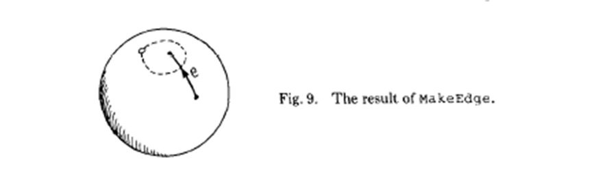

com.nodename/edge-algebra
0.1.0-SNAPSHOT
An implementation of Guibas, L. and J. Stolfi. 1985. "Primitives for the Manipulation of General Subdivisions and the Computation of Voronoi Diagrams," ACM Transactions on Graphics 4(2):74-123.
dependencies
| org.clojure/clojure | 1.6.0 | |
| org.clojure/clojurescript | 0.0-2322 | |
| org.clojure/core.async | 0.1.346.0-17112a-alpha | |
| om | 0.7.1 |
(this space intentionally left almost blank)
namespaces
- delaunay.main
- thi.ng.geom.core.macros
- thi.ng.macromath.core
- delaunay.div-conq
- delaunay.incremental
- delaunay.utils.circle
- delaunay.utils.matrix33
- edge-algebra.cheat-codes
- edge-algebra.core
- edge-algebra.dual
- edge-algebra.edge
- edge-algebra.edge-record
- edge-algebra.node
- edge-algebra.record
- edge-algebra.state.app-mutators
- edge-algebra.state.app-state
- instrument.decorators
- thi.ng.common.data.byteutils
- thi.ng.common.data.core
- thi.ng.common.data.intervaltree
- thi.ng.common.data.unionfind
- thi.ng.common.error
- thi.ng.common.math.core
- thi.ng.common.version
- thi.ng.geom.core
- thi.ng.geom.core.matrix
- thi.ng.geom.core.quaternion
- thi.ng.geom.core.utils
- thi.ng.geom.core.vector
- thi.ng.geom.core.version
- thi.ng.macromath.version
- utils.reporting
- utils.spawn
(ns delaunay.main
(:require [delaunay.div-conq :refer [pt delaunay]]
[edge-algebra.state.app-mutators :refer [reset-state!]]))(defn make-sites
[w h how-many]
(vec (for [_ (range how-many)]
(pt (rand-int w) (rand-int h)))))(defn -main
[]
(reset-state!)
(let [sites (make-sites 800 400 20)]
(println sites)
(delaunay sites)))(ns thi.ng.geom.core.macros (:require [thi.ng.macromath.core :as mm]))
(defmacro det-item
[a b c d, e f g h, i j k l, m n o p]
`(+ (mm/sub
(mm/mul ~a ~b ~c ~d)
(mm/mul ~e ~f ~g ~h)
(mm/mul ~i ~j ~k ~l))
(mm/mul ~m ~n ~o ~p)))(defmacro inv-item [a b c d e f g] `(* (mm/msubadd ~a ~b ~c ~d ~e ~f) ~g))
(ns thi.ng.macromath.core)
Constructs macro to build inlined nested expressions which when call will apply f successively to all args. Supports arities 2-8.
(defmacro defmathop
[name f]
`(defmacro ~name
([a# b#]
`(~~f ~a# ~b#))
([a# b# c#]
`(~~f (~~f ~a# ~b#) ~c#))
([a# b# c# d#]
`(~~f (~~f (~~f ~a# ~b#) ~c#) ~d#))
([a# b# c# d# e#]
`(~~f (~~f (~~f (~~f ~a# ~b#) ~c#) ~d#) ~e#))
([a# b# c# d# e# f#]
`(~~f (~~f (~~f (~~f (~~f ~a# ~b#) ~c#) ~d#) ~e#) ~f#))
([a# b# c# d# e# f# g#]
`(~~f (~~f (~~f (~~f (~~f (~~f ~a# ~b#) ~c#) ~d#) ~e#) ~f#) ~g#))
([a# b# c# d# e# f# g# h#]
`(~~f (~~f (~~f (~~f (~~f (~~f (~~f ~a# ~b#) ~c#) ~d#) ~e#) ~f#) ~g#) ~h#))))Constructs macro to build inlined nested expressions which when call will apply f to inner pairs and f2 to combine results.
(defmacro defmathop2
[name f f2]
`(defmacro ~name
([a# b# c#]
`(~~f2 (~~f ~a# ~b#) ~c#))
([a# b# c# d#]
`(~~f2 (~~f ~a# ~b#) (~~f ~c# ~d#)))
([a# b# c# d# e#]
`(~~f2 (~~f2 (~~f ~a# ~b#) (~~f ~c# ~d#)) ~e#))
([a# b# c# d# e# f#]
`(~~f2 (~~f2 (~~f ~a# ~b#) (~~f ~c# ~d#)) (~~f ~e# ~f#)))
([a# b# c# d# e# f# g#]
`(~~f2 (~~f2 (~~f2 (~~f ~a# ~b#) (~~f ~c# ~d#)) (~~f ~e# ~f#)) ~g#))
([a# b# c# d# e# f# g# h#]
`(~~f2 (~~f2 (~~f2 (~~f ~a# ~b#) (~~f ~c# ~d#)) (~~f ~e# ~f#)) (~~f ~g# ~h#)))))Takes f, f2 & f3 as syntax-quoted symbols. Constructs a macro which when called, applies f to all but the last 1 or 2 args. The remaining arg(s) are combined with the first result using f2. Furthermore, for arities 6 and 8, f3 is first applied to the last two args are before the final application of f2. For example:
(defmathop* maddsub `madd `- `*)
(maddsub 2 3 4 5) => (- (madd 2 3 4) 5)
(maddsub 2 3 4 5 6) => (- (madd 2 3 4) (* 5 6))
(defmacro defmathop3
[name f f2 f3]
`(defmacro ~name
([a# b# c# d#]
`(~~f2 (~~f ~a# ~b# ~c#) ~d#))
([a# b# c# d# e#]
`(~~f2 (~~f ~a# ~b# ~c# ~d#) ~e#))
([a# b# c# d# e# f#]
`(~~f2 (~~f ~a# ~b# ~c# ~d#) (~~f3 ~e# ~f#)))
([a# b# c# d# e# f# g#]
`(~~f2 (~~f ~a# ~b# ~c# ~d# ~e# ~f#) ~g#))
([a# b# c# d# e# f# g# h#]
`(~~f2 (~~f ~a# ~b# ~c# ~d# ~e# ~f#) (~~f3 ~g# ~h#)))))(defmathop add `+) (defmathop sub `-) (defmathop mul `*) (defmathop div `/) (defmathop2 madd `* `+) (defmathop2 msub `* `-) (defmathop2 addm `+ `*) (defmathop2 subm `- `*) (defmathop2 adddiv `+ `/) (defmathop2 subdiv `- `/) (defmathop3 maddsub `madd `- `*) (defmathop3 addmsub `addm `- `*) (defmathop3 msubadd `msub `+ `*) (defmathop3 submadd `subm `+ `*)
Returns y if x > 0, else 0
(defmacro if* [pred x y] `(if (~pred ~x) ~y 0))
Constructs a bit mask from given values & predicate fn applied to each. If pred returns truthy value the value's related bit is set. Bit values start at 1 and double for successive args (max 8).
(defmacro bitmask
([pred a]
`(if* ~pred ~a 0x01))
([pred a b]
`(bit-or (bitmask ~pred ~a) (if* ~pred ~b 0x02)))
([pred a b c]
`(bit-or (bitmask ~pred ~a ~b) (if* ~pred ~c 0x04)))
([pred a b c d]
`(bit-or (bitmask ~pred ~a ~b ~c) (if* ~pred ~d 0x08)))
([pred a b c d e]
`(bit-or (bitmask ~pred ~a ~b ~c ~d) (if* ~pred ~e 0x10)))
([pred a b c d e f]
`(bit-or (bitmask ~pred ~a ~b ~c ~d ~e) (if* ~pred ~f 0x20)))
([pred a b c d e f g]
`(bit-or (bitmask ~pred ~a ~b ~c ~d ~e ~f) (if* ~pred ~g 0x40)))
([pred a b c d e f g h]
`(bit-or (bitmask ~pred ~a ~b ~c ~d ~e ~f ~g) (if* ~pred ~h 0x80))))(ns delaunay.div-conq
(:require
;;
;; the two topological operators exported by the edge-algebra library:
[edge-algebra.core :refer [make-edge! splice!]]
;;
;; application-specific mutators:
[edge-algebra.state.app-mutators :refer [set-data! set-sym-data! remove-edge-record!]]
;;
;; some functions for navigating to related edges:
[edge-algebra.edge :refer [sym o-next o-prev l-next r-prev]];;
;;
;; geometry support from toxi's geom library:
[thi.ng.geom.core :as g]
[thi.ng.geom.core.vector :refer [vec2]]
[thi.ng.geom.core.matrix :refer [matrix44]]
[thi.ng.geom.core.utils :refer [norm-sign2]]
;;
;; debugging aid:
[edge-algebra.cheat-codes :refer [edge-info]]
;;
; [utils.spawn :refer [go-fn]]
[clojure.core.async
:refer [>! take! chan go go-loop alts!]]))An alias for the 2-D point constructor:
(def pt vec2)
For the Delaunay application, the data field of an Edge will contain the coordinates of its origin:
(defn org [edge] (:data edge))
(defn set-org! [edge coords] (set-data! edge coords))
and similarly, the data field of its symmetric Edge will contain the coordinates of its destination:
(defn dest [edge] (org (sym edge)))
(defn set-dest! [edge coords] (set-sym-data! edge coords))
(defn make-d-edge!
[org dest]
(-> (make-edge!)
(set-org! org)
(set-dest! dest)))(defn connect!
[a b]
(let [e (make-d-edge! (dest a) (org b))]
(splice! e (l-next a))
(splice! (sym e) b)
e))(defn delete-edge! [e] (splice! e (o-prev e)) (splice! (sym e) (o-prev (sym e))) (remove-edge-record! e))
In addition to the two topological operations, we need just two geometric primitives: in-circle? and ccw?
The predicate in-circle? is defined to be true if and only if point d is interior to the region of the plane that is bounded by the oriented circle abc and lies to the left of it.
(defn in-circle?
[a b c d]
(let [matrix (matrix44 (.-x a) (.-y a) ( .mag-squared a) 1
(.-x b) (.-y b) ( .mag-squared b) 1
(.-x c) (.-y c) ( .mag-squared c) 1
(.-x d) (.-y d) ( .mag-squared d) 1)]
(> (.determinant matrix)
0)))The predicate ccw? is true if the points a, b, and c form a counterclockwise-oriented triangle.
(defn ccw? [a b c] (pos? (norm-sign2 a b c)))
(defn right-of? [point edge] (ccw? point (dest edge) (org edge)))
(defn left-of? [point edge] (ccw? point (org edge) (dest edge)))
Sort by x, and when xs are equal, sort by y
(defn sort-xy [seq] (sort-by (juxt #(.-x %) #(.-y %)) seq))
(defn halves
[seq]
(let [half-way (/ (count seq) 2)]
(map vec (split-at half-way seq))))(defn slide-left!
[edge]
(let [t (o-next edge)]
(delete-edge! edge)
t))(defn slide-right!
[edge]
(let [t (o-prev edge)]
(delete-edge! edge)
t))Is the dest point of edge above this right-to-left cross-edge?
(defn dest-above? [edge cross-edge] (right-of? (dest edge) cross-edge))
Locate the first l point (dest l-candidate) to be encountered by the rising bubble, and delete any l edges coming out of (dest cross-edge) that fail the circle test. Return the left candidate edge.
(defn bubble-left!
[cross-edge]
(let [initial-edge (o-next (sym cross-edge))]
(if (dest-above? initial-edge cross-edge)
(loop [edge initial-edge]
(if (in-circle? (dest cross-edge) (org cross-edge) (dest edge)
(dest (o-next edge)))
(recur (slide-left! edge))
edge))
initial-edge)))Symmetrically to bubble-left!, return the right candidate edge.
(defn bubble-right!
[cross-edge]
(let [initial-edge (o-prev cross-edge)]
(if (dest-above? initial-edge cross-edge)
(loop [edge initial-edge]
(if (in-circle? (dest cross-edge) (org cross-edge) (dest edge)
(dest (o-prev edge)))
(recur (slide-right! edge))
edge))
initial-edge)))(defn lower-common-tangent
[ldi rdi]
(loop [left ldi
right rdi]
(cond
(left-of? (org right) left) (recur (l-next left) right)
(right-of? (org left) right) (recur left (r-prev right))
:else [left right])))(defn bubble-up!
[initial-cross-edge]
(loop [cross-edge initial-cross-edge]
(let [l-candidate (bubble-left! cross-edge)
r-candidate (bubble-right! cross-edge)
;;
dest-above-cross-edge? (fn [edge] (dest-above? edge cross-edge))]
;;
;; If neither (dest l-candidate) nor (dest r-candidate) is above cross-edge,
;; then cross-edge is the upper common tangent and we're done.
;;
;; Otherwise:
(when (or (dest-above-cross-edge? l-candidate)
(dest-above-cross-edge? r-candidate))
;;
;; The next cross edge is to be connected to either
;; (dest l-candidate) or (dest r-candidate).
;; If both dests are above cross-edge,
;; then choose the appropriate one using the in-circle? test:
(if (or (not (dest-above-cross-edge? l-candidate))
(and (dest-above-cross-edge? r-candidate)
(in-circle? (dest l-candidate) (org l-candidate) (org r-candidate)
(dest r-candidate))))
;;
;; Add new cross edge from (dest r-candidate) to (dest cross-edge):
(recur (connect! r-candidate (sym cross-edge)))
;;
;; Else add new cross edge from (org cross-edge) to (dest l-candidate):
(recur (connect! (sym cross-edge) (sym l-candidate))))))))(defn merge!
[ldo ldi rdi rdo]
;;
;; Compute the lower common tangent of l and r:
(let [[left-tangent right-tangent] (lower-common-tangent ldi rdi)
;;
;; Create initial-cross-edge from (org right-tangent) to (org left-tangent)
;; (Note that we always choose the right-to-left direction for a cross-edge):
initial-cross-edge (connect! (sym right-tangent) left-tangent)]
(bubble-up! initial-cross-edge)
;; Return two edges: the counterclockwise convex-hull edge out of the leftmost vertex,
;; and the clockwise convex-hull edge out of the rightmost vertex.
(let [left-edge (if (= (org left-tangent) (org ldo))
(sym initial-cross-edge)
ldo)
right-edge (if (= (org right-tangent) (org rdo))
initial-cross-edge
rdo)]
[left-edge right-edge])))(defn delaunay-2'
[sites]
(let [[s1 s2] sites
a (make-d-edge! s1 s2)]
(println "2 returning" [(edge-info a) (edge-info (sym a))])
[a (sym a)]))(defn delaunay-3'
[sites]
(let [[s1 s2 s3] sites
a (make-d-edge! s1 s2)
b (make-d-edge! s2 s3)]
(splice! (sym a) b)
;; Now close the triangle:
(cond
(ccw? s1 s2 s3) (do
(connect! b a)
[a (sym b)])
(ccw? s1 s3 s2) (let [c (connect! b a)]
[(sym c) c])
;; Otherwise the three points are collinear:
:else [a (sym b)])))Calculate the Delaunay triangulation of the sites; assume the sites are sorted.
(defn delaunay'
[sites]
(println "delaunay' sites:" sites)
(condp = (count sites)
;; The base cases: 2 sites and 3 sites:
2 (delaunay-2' sites)
3 (delaunay-3' sites)
;;
;; The default case, four or more sites: divide and conquer
(let [; godel (go-fn delaunay')
[l r] (halves sites)]
(println)
(println "r:" r)
(println "l:" l)
(println)
#_(let [l-chan (godel l)
r-chan (godel r)]
(go
(let [[ldo ldi] (<! l-chan)
[rdi rdo] (<! r-chan)]
(merge! ldo ldi rdi rdo))))
(let [[ldo ldi] (delaunay' l)
[rdi rdo] (delaunay' r)]
(merge! ldo ldi rdi rdo)))))Run delaunay' on sorted sites with no duplicates. This makes all future splittings constant-time operations.
(defn delaunay [sites] (delaunay' (sort-xy (vec (distinct sites)))))
This file autogenerated from src/cljx/delaunay/div_conq.cljx
(ns delaunay.incremental (:refer-clojure :exclude [swap!]))
(ns delaunay.utils.circle
(:require [thi.ng.geom.core :as g]
[thi.ng.geom.core.vector :refer [vec2]]
[delaunay.utils.matrix33 :refer [matrix33]]))(defn determinant
[m]
(.determinant m))(defn mag-squared
[p]
(.mag-squared p))Calculate center and radius of the circle passing through p1, p2, and p3.
(defn center-and-radius
[p1 p2 p3]
(let [a (determinant (matrix33 (.-x p1) (.-y p1) 1
(.-x p2) (.-y p2) 1
(.-x p3) (.-y p3) 1))
d (- (determinant (matrix33 (mag-squared p1) (.-y p1) 1
(mag-squared p2) (.-y p2) 1
(mag-squared p3) (.-y p3) 1)))
e (determinant (matrix33 (mag-squared p1) (.-x p1) 1
(mag-squared p2) (.-x p2) 1
(mag-squared p3) (.-x p3) 1))
f (- (determinant (matrix33 (mag-squared p1) (.-x p1) (.-y p1)
(mag-squared p2) (.-x p2) (.-y p2)
(mag-squared p3) (.-x p3) (.-y p3))))
center (vec2 (- (/ d (* 2 a))) (- (/ e (* 2 a))))
radius (Math/sqrt (- (/ (+ (* d d) (* e e)) (* 4 (* a a))) (/ f a)))]
{:center center :radius radius}))This file autogenerated from src/cljx/delaunay/utils/circle.cljx
(ns delaunay.utils.matrix33
(:require
[thi.ng.geom.core :as g]
[thi.ng.geom.core.vector :as v]
[thi.ng.common.math.core :as m :refer [*eps* PI TWO_PI]]
[thi.ng.common.error :as err]
[thi.ng.macromath.core :as mm]
[thi.ng.geom.core.macros :as gmc])
(:import
[thi.ng.geom.core.vector Vec2 Vec3]))This namespace implements the 3x3 matrix consistently with the matrices in thi.ng.geom. This is not the full implementation but just enough to support calculation of determinants.
(defn- hash-coll* [coll] (reduce #(-> % (unchecked-multiply-int 31) (unchecked-add-int (hash %2))) 1 coll))
(defn- hash-matrix [coll] (mix-collection-hash (hash-coll* coll) (count coll)))
(deftype Matrix33
[^double m00 ^double m01 ^double m02
^double m10 ^double m11 ^double m12
^double m20 ^double m21 ^double m22]
java.util.Collection
clojure.lang.IPersistentCollection
clojure.lang.IPersistentVector
clojure.lang.ISeq
clojure.lang.Seqable
clojure.lang.Sequential
clojure.lang.IHashEq
(empty [_] (err/unsupported!))
( count [_] 9)
( seq [_] _)
( more [_] (next _))
( first [_] m00)
( next
[_] (seq [m01 m02
m10 m11 m12
m20 m21 m22]))
( cons
[_ x]
[m00 m01 m02
m10 m11 m12
m20 m21 m22 x])
( nth [_ k]
(if (m/in-range? 0 8 k)
(case (int k)
0 m00 1 m01 2 m02
3 m10 4 m11 5 m12
6 m20 7 m21 8 m22)
(err/illegal-arg! k)))
( nth [_ k nf]
(if (m/in-range? 0 8 k)
(case (int k)
0 m00 1 m01 2 m02
3 m10 4 m11 5 m12
6 m20 7 m21 8 m22)
nf))
( equiv [_ o]
(if (and (sequential? o) (= 9 (count o)))
(every? #(= (% 0) (% 1)) (map vector _ o))
false))
( hasheq [_] (hash-matrix _))
(hashCode [_] (hash-coll* _))
(equals
[_ o]
(if (and (sequential? o) (= 9 (count o)))
(every? #(clojure.lang.Util/equals (% 0) (% 1)) (map vector _ o))
false))
(isEmpty
[_] false)
(iterator
[_] (.iterator ^java.util.Collection
(list m00 m01 m02
m10 m11 m12
m20 m21 m22)))
(toArray
[_] (object-array _))
(size [_] 9)
(length [_] 9)
Object
(toString
[_]
(apply str (concat "[" (interpose \space _) "]")))
g/PDeterminant
(determinant
[_]
(reduce
+
[(mm/mul m00 m11 m22)
(- (mm/mul m00 m12 m21))
(- (mm/mul m01 m10 m22))
(mm/mul m01 m12 m20)
(mm/mul m02 m10 m21)
(- (mm/mul m02 m11 m20))])))(defmethod print-method Matrix33 [^Matrix33 o ^java.io.Writer w] (.write w (.toString o)))
(def ^:const M33 (Matrix33. 1.0 0.0 0.0 0.0 1.0 0.0 0.0 0.0 1.0))
(defn matrix33
([] M33)
([[m00 m01 m02 m10 m11 m12 m20 m21 m22]]
(Matrix33. m00 m01 m02 m10 m11 m12 m20 m21 m22))
([m00 m01 m02 m10 m11 m12 m20 m21 m22]
(Matrix33. m00 m01 m02 m10 m11 m12 m20 m21 m22)))This file autogenerated from src/cljx/delaunay/utils/matrix33.cljx
(ns edge-algebra.cheat-codes
(:require [edge-algebra.state.app-state :refer [app-state]]
[edge-algebra.edge :refer [o-next sym]]))(defn edge-info
[edge]
(str (:edge-record edge) " " (:r edge) " " (:f edge) " "
(:data edge) "->" (:data (sym edge))))(defn show-all-edge-records
[app-state]
(println "All edge records:")
(doseq [er (:edge-records @app-state)]
(println "ER" (:index er) ":")
(doseq [pair (:edges er)]
(doseq [edge pair]
(println "Edge:" (edge-info edge) "next:"(edge-info (o-next edge)))))))This file autogenerated from src/cljx/edgealgebra/cheatcodes.cljx
A data structure for generalized diagrams
"Generalized diagrams -- that is, embeddings of graphs in two-dimensional manifolds. This structure represents simultaneously an embedding, its dual, and its mirror image. Furthermore, just two operators are sufficient for building and modifying arbitrary diagrams."
Some Topology
"In mathematics, the closure of a subset S in a topological space consists of all points in S plus the limit points of S. The closure of S is also defined as the union of S and its boundary." -- Wikipedia
Homeomorphisms are the isomorphisms in the category of topological spaces.
(ns edge-algebra.core
(:require [edge-algebra.edge-record :refer [new-edge-record!]]
[edge-algebra.record :refer [get-e0]]
[edge-algebra.state.app-mutators :refer [set-next!]]
[edge-algebra.edge :refer [o-next rot sym]]
[edge-algebra.cheat-codes :refer [edge-info]]))The Two Operators Exported by the Library

(defn make-edge! [] (get-e0 (new-edge-record!)))

splice! is its own inverse!
(defn splice!
[edge0 edge1]
(let [edge0-next (o-next edge0)
edge1-next (o-next edge1)
alpha (rot edge0-next)
beta (rot edge1-next)
alpha-next (o-next alpha)
beta-next (o-next beta)]
(let [edge0 (set-next! edge0 edge1-next)
edge1 (set-next! edge1 edge0-next)]
(set-next! alpha beta-next)
(set-next! beta alpha-next)
[edge0 edge1])))This file autogenerated from src/cljx/edge_algebra/core.cljx
(ns edge-algebra.dual
(:require [edge-algebra.state.app-state :refer [get-edge-record]]
[edge-algebra.record :refer [get-e0]]
[edge-algebra.edge :refer [rot flip
origin-vertex dest-vertex
left-face right-face]]))Node roles with respect to an edge:
(def node-roles [
:right-face
:dest-vertex
:left-face
:origin-vertex
])The role of node with respect to edge.
(defn node-role
[node edge]
(let [role-index (mod (- (:r node) (:r edge)) 4)]
(node-roles role-index)))(defn which
[node-or-edge]
(if (nil? (:next node-or-edge))
:node
:edge))The dual of an Edge or a Node is its counterpart in the dual subdivision.
(defmulti dual which)
(defmethod dual :edge [edge] (rot (flip edge)))
(defmethod dual :node
[node]
(let [e0 (get-e0 (get-edge-record node))
node-relationship-to-e0 (node-role node e0)
dual-edge (dual e0)
dual-node-relationship-to-dual-edge (condp = node-relationship-to-e0
:right-face (if (zero? (:f node))
dest-vertex
origin-vertex)
:dest-vertex right-face
:left-face (if (zero? (:f node))
origin-vertex
dest-vertex)
:origin-vertex left-face)]
(dual-node-relationship-to-dual-edge dual-edge)))This file autogenerated from src/cljx/edge_algebra/dual.cljx
(ns edge-algebra.edge
(:require [edge-algebra.state.app-state :refer [get-val get-edge-record]]
[edge-algebra.record :refer [get-node get-edge]]))(defn new-edge!
[r f edge-record-index next]
{:r r
:f f
:data nil
:edge-record edge-record-index
:next next})The four nodes directly connected to this edge represent its direction and orientation:
Direction: origin-vertex and dest-vertex
(defn origin-vertex
[edge]
(let [r (+ (:r edge) 3)
f (:f edge)]
(get-node (get-edge-record edge) r f)))(defn dest-vertex
[edge]
(let [r (+ (:r edge) 1)
f (:f edge)]
(get-node (get-edge-record edge) r f)))Orientation: left-face and right-face
(defn left-face
[edge]
(let [r (+ (+ (:r edge) 2) (* 2 (:f edge)))
f (:f edge)]
(get-node (get-edge-record edge) r f)))(defn right-face
[edge]
(let [r (+ (:r edge) (* 2 (:f edge)))
f (:f edge)]
(get-node (get-edge-record edge) r f)))get the three related edges within the same edge-record: rot, sym, and flip
(defn rot
([edge] (rot 1 edge))
([exponent edge]
(let [r (+ (:r edge) (* (+ 1 (* 2 (:f edge))) exponent))
f (:f edge)]
(get-edge (get-edge-record edge) r f))))return the symmetric QuadEdge: the one with same orientation and opposite direction
(defn sym
([edge] (sym 1 edge))
([exponent edge]
; (println "SYM: input r f: " (:r edge) " " (:f edge))
(let [r (+ (:r edge) (* 2 exponent))
f (:f edge)]
; (println "SYM: new r f: " r " " f)
(get-edge (get-edge-record edge) r f))))return the QuadEdge with same direction and opposite orientation
(defn flip
([edge] (flip 1 edge))
([exponent edge]
(let [r (:r edge)
f (+ (:f edge) exponent)]
(get-edge (get-edge-record edge) r f))))get connected edges: oPrev, oNext, dPrev, dNext, lPrev, lNext, rPrev, rNext
First we give the eight primitive operations that find the next and prev edges through each of the four rings in which this edge participates. Note that they all access a single property of the Edge type, :next.
find the QuadEdge immediately following this one counterclockwise in the ring of edges out of originVertex. This is the only topological property that is stored on the edge; all others are derived.
(defn ^:private onext [edge]
;; Get the current value of edge from app-state
;; so we have the correct :next property:
(let [edge (get-val edge)]
(get-edge (get-edge-record (:next edge))
(:r (:next edge)) (:f (:next edge)))))find the QuadEdge immediately following this one clockwise in the ring of edges out of originVertex:
(def ^:private oprev (comp rot onext rot))
find the QuadEdge immediately following this one counterclockwise in the ring of edges into destVertex:
(def ^:private dnext (comp sym onext sym))
find the QuadEdge immediately following this one clockwise in the ring of edges into destVertex:
(def ^:private dprev (comp #(rot -1 %) onext #(rot -1 %)))
find the next counterclockwise QuadEdge with the same left face:
(def ^:private lnext (comp rot onext #(rot -1 %)))
find the next clockwise QuadEdge with the same left face:
(def ^:private lprev (comp sym onext))
find the next clockwise QuadEdge with the same right face:
(def ^:private rnext (comp #(rot -1 %) onext rot))
find the next clockwise QuadEdge with the same right face:
(def ^:private rprev (comp onext sym))
Now we develop the interfaces to these operations that allow an exponent indicating how many steps (positive or negative) to traverse the respective rings:
(def invert {onext oprev
oprev onext
dnext dprev
dprev dnext
lnext lprev
lprev lnext
rnext rprev
rprev rnext})(defn neighbor
[edge op exponent]
(let [[op exponent] (if (neg? exponent)
[(invert op) (- exponent)]
[op exponent])]
(nth (iterate op edge) exponent)))(defn o-next ([edge] (o-next 1 edge)) ([exponent edge] (neighbor edge onext exponent)))
(defn o-prev ([edge] (o-prev 1 edge)) ([exponent edge] (neighbor edge oprev exponent)))
(defn d-next ([edge] (d-next 1 edge)) ([exponent edge] (neighbor edge dnext exponent)))
(defn d-prev ([edge] (d-prev 1 edge)) ([exponent edge] (neighbor edge dprev exponent)))
(defn l-next ([edge] (l-next 1 edge)) ([exponent edge] (neighbor edge lnext exponent)))
(defn l-prev ([edge] (l-prev 1 edge)) ([exponent edge] (neighbor edge lprev exponent)))
(defn r-next ([edge] (r-next 1 edge)) ([exponent edge] (neighbor edge rnext exponent)))
(defn r-prev ([edge] (r-prev 1 edge)) ([exponent edge] (neighbor edge rprev exponent)))
This file autogenerated from src/cljx/edge_algebra/edge.cljx
(ns edge-algebra.edge-record
(:require [edge-algebra.state.app-state :refer [next-er-index]]
[edge-algebra.state.app-mutators :refer [add-edge-record!]]
[edge-algebra.node :refer [new-node!]]
[edge-algebra.edge :refer [new-edge!]]))An EdgeRecord represents eight edges: the four oriented and directed versions of an undirected edge and of its dual. The EdgeRecord also represents the eight nodes that are the vertices of the edge and of its dual. The duals of vertices of an edge are faces incident to the edge's dual.
(defn new-edge-record!
[]
(let [index (next-er-index)
n00 (new-node! 0 0 index)
n01 (new-node! 0 1 index)
nodes [
[
n00
n01
]
[
(new-node! 1 0 index)
(new-node! 1 1 index)
]
[
(new-node! 2 0 index :clone-of n00)
(new-node! 2 1 index :clone-of n01)
]
[
(new-node! 3 0 index)
(new-node! 3 1 index)
]
]
rnext [0 3 2 1]
edges (vec (for [r (range 0 4)]
(vec (for [f (range 0 2)]
(let [next {:r (rnext r) :f f :edge-record index}]
(new-edge! r f index next))))))]
(let [er {:edges edges :nodes nodes :index index}]
(add-edge-record! er)
er)))This file autogenerated from src/cljx/edgealgebra/edgerecord.cljx
(ns edge-algebra.node (:require [edge-algebra.state.app-state :refer [get-edge-record]]))
A Node represents either a vertex or a face of the graph
(defn new-node!
[r f edge-record-index & {:keys [clone-of]
:or {clone-of nil}}]
{:r r
:f f
:edge-record edge-record-index
:unique-id (if (nil? clone-of)
(gensym)
(:unique-id clone-of))})Are they the same node?
(defn equal? [node0 node1] (= (:unique-id node0) (:unique-id node1)))
This file autogenerated from src/cljx/edge_algebra/node.cljx
(ns edge-algebra.record)
This namespace holds some edge-record related vars that we want to be able to require without introducing a dependency cycle.
Edge-record accessor functions:
(defn- get-elt [edge-record type r f] (get-in edge-record [type (mod r 4) (mod f 2)]))
(defn get-node [edge-record rotation f] (get-elt edge-record :nodes rotation f))
(defn get-edge [edge-record rotation f] (get-elt edge-record :edges rotation f))
Return the canonical representative edge of an edge record
(defn get-e0 [edge-record] (get-edge edge-record 0 0))
This file autogenerated from src/cljx/edge_algebra/record.cljx
(ns edge-algebra.state.app-mutators
(:require [edge-algebra.state.app-state
:refer [app-state initial-state
get-edge-record
]]
[utils.reporting
:refer [get-fn-name]]))(defn wrap-before
[f aux]
(fn [& args]
(do
(aux args)
(apply f args))))(defn wrap-after
[f aux]
(fn [& args]
(let [val (apply f args)]
(aux args)
val)))must be all in a transaction: we have to inject :add-to-undo into f's om/transact! call.
(defn update!
[path value]
(swap! app-state assoc-in path value))(defn reset-state! [] (update! [] initial-state))
Set the :adding-edge-record field of app-state
(defn set-adding-edge-record
[er]
(let [val (if (nil? er) nil {:type :adding
:er-index (:index er)})]
(swap! app-state assoc-in [:current-edge-record] val)))Set the :removing-edge-record field of app-state
(defn set-removing-edge-record
[er]
(let [val (if (nil? er) nil {:type :removing
:er-index (:index er)})]
(swap! app-state assoc-in [:current-edge-record] val)))(defn clear-current-edge-record! [] (set-adding-edge-record nil))
(defn add-edge-record!
[er]
(set-adding-edge-record er)
(swap! app-state update-in [:edge-records] conj er))(defn add-circle!
[c]
(swap! app-state update-in [:circles] conj c))(defn clear-circles! [& _] (update! [:circles] []))
Return a function that will add the args of f to :circles before invoking f.
(defn wrap-with-add-circle [f] (wrap-before f add-circle!))
Return a function that will reset :circles after invoking f.
(defn wrap-with-clear-circles [f] (wrap-after f clear-circles!))
(defn add-message!
[args]
(swap! app-state update-in [:messages] conj args))(defn clear-messages! [] (update! [:messages] []))
Return a function that will add the args of f to :messages after invoking f.
(defn wrap-with-add-message [f] (wrap-after f add-message!))
Return a function that will add the args of f to :messages instead of invoking f.
(defn replace-with-add-message
[f]
(fn [& args]
(add-message! args)))Return a function that will add the name and current args of f to :messages before invoking f, and the name and return value after.
(defn wrap-with-name-and-args-reporting
[f]
(fn [& args]
(let [fn-name (get-fn-name f)]
(add-message! (vec (concat [fn-name] args)))
(let [val (apply f args)]
#_(add-message! (vec (concat [fn-name] args [val]))) ;; !! this causes an error!
val))))Return a function that will add the args of f to :circles before invoking f.
(defn wrap-with-add-circle-and-reporting
[f]
(fn [& args]
(add-circle! args)
(apply f args)))Return a function that will reset :messages after invoking f.
(defn wrap-with-clear-messages
[f]
(fn [& args]
(let [val (apply f args)]
(clear-messages!)
val)))Mark edge's edge record as deleted. We don't really delete it because edge records are referred to by their indices in :edge-records.
(defn remove-edge-record!
[edge]
(set-removing-edge-record (get-edge-record edge))
(let [er-index (:edge-record edge)
path [:edge-records er-index :deleted]]
(update! path true)))Get the current o-next of edge.
(defn o-next [edge] (get-in @app-state [:edge-records (:edge-record edge) :edges (:r edge) (:f edge) :next]))
Set edge's data. Return the updated edge.
(defn set-data!
[edge data]
(let [er-index (:edge-record edge)
r (:r edge)
f (:f edge)
path [:edge-records er-index :edges r f :data]]
(update! path data)
(let [updated-edge (get-in @app-state (vec (butlast path)))]
;(println "set-data! edge:" edge)
;(println "set-data! updated-edge:" updated-edge)
updated-edge)))Set sym edge's data. Return the calling edge.
(defn set-sym-data!
[edge data]
(let [er-index (:edge-record edge)
r (:r edge)
sym-r (mod (+ 2 (:r edge)) 4)
f (:f edge)
sym-path [:edge-records er-index :edges sym-r f :data]]
(update! sym-path data)
edge))Set edge's next. Return the updated edge.
(defn set-next!
[edge next-edge]
(let [next {:r (:r next-edge)
:f (:f next-edge)
:edge-record (:edge-record next-edge)}
er-index (:edge-record edge)
r (:r edge)
f (:f edge)
path [:edge-records er-index :edges r f :next]]
(update! path next)
(get-in @app-state (vec (butlast path)))))This file autogenerated from src/cljx/edgealgebra/state/appmutators.cljx
(ns edge-algebra.state.app-state)
TODO This mixes actual app state :edge-records with transients. Separate them.
(def initial-state {:edge-records []
:current-edge-record nil
:circles []
:messages []})(def app-state (atom initial-state))
(defn next-er-index [] (count (:edge-records @app-state)))
(defn get-edge-record
[edge-or-node]
(let [er-index (:edge-record edge-or-node)]
((:edge-records @app-state) er-index)))Get the current value of edge. This gives us the up-to-date :next and :data fields.
(defn get-val [edge] (get-in @app-state [:edge-records (:edge-record edge) :edges (:r edge) (:f edge)]))
This file autogenerated from src/cljx/edgealgebra/state/appstate.cljx
(ns instrument.decorators
(:require [delaunay.div-conq :as dq]
[edge-algebra.state.app-mutators
:refer [wrap-with-undo
wrap-with-add-circle
wrap-with-clear-circles
wrap-with-add-message
replace-with-add-message
wrap-with-name-and-args-reporting
wrap-with-clear-messages
reset-state!]]))(defn decorate
[f]
(fn [& args]
(with-redefs [edge-algebra.core/splice! (wrap-with-name-and-args-reporting
edge-algebra.core/splice!)
dq/make-d-edge! (wrap-with-clear-messages
(wrap-with-clear-circles
(wrap-with-undo
(wrap-with-name-and-args-reporting
dq/make-d-edge!))))
dq/delete-edge! (wrap-with-clear-messages
(wrap-with-clear-circles
(wrap-with-undo
(wrap-with-name-and-args-reporting
dq/delete-edge!))))
dq/in-circle? (wrap-with-add-circle
(wrap-with-name-and-args-reporting
dq/in-circle?))
println (replace-with-add-message
println)]
(apply f args))))This file autogenerated from src/cljx/instrument/decorators.cljx
(ns thi.ng.common.data.byteutils (:import [java.io OutputStream InputStream]))
(defn int->byte [x] (if (> x 0x7f) (- x 0x100) x))
(defn byte->int [x] (if (neg? x) (+ x 0x100) x))(defn read-int16-le
[^InputStream in]
(let [buf (byte-array 2)]
(.read in buf 0 2)
(bit-or (byte->int (aget buf 0)) (bit-shift-left (byte->int (aget buf 1)) 8))))(defn read-int32-le
[^InputStream in]
(let [buf (byte-array 4)]
(.read in buf 0 4)
(bit-or
(byte->int (aget buf 0))
(bit-shift-left (byte->int (aget buf 1)) 8)
(bit-shift-left (byte->int (aget buf 2)) 16)
(bit-shift-left (byte->int (aget buf 3)) 24))))(defn read-float-le [^InputStream in] (Float/intBitsToFloat (unchecked-int (read-int32-le in))))
(defn read-vec3-le [^InputStream in] [(read-float-le in) (read-float-le in) (read-float-le in)])
(defn write-str-bytes [^OutputStream out ^String x] (.write out (.getBytes x)) out)
(defn write-int16-le
[^OutputStream out x]
(.write
out
(byte-array
[(unchecked-byte (bit-and x 0xff))
(unchecked-byte (bit-and (bit-shift-right x 8) 0xff))]))
out)(defn write-int32-le
[^OutputStream out x]
(.write
out
(byte-array
[(unchecked-byte (bit-and x 0xff))
(unchecked-byte (bit-and (bit-shift-right x 8) 0xff))
(unchecked-byte (bit-and (bit-shift-right x 16) 0xff))
(unchecked-byte (bit-shift-right x 24))]))
out)(defn write-float-le [^OutputStream out x] (write-int32-le out (Float/floatToRawIntBits x)))
(defn write-vec3-le [^OutputStream out [x y z]] (write-float-le out x) (write-float-le out y) (write-float-le out z))
This file autogenerated from src/cljx/thi/ng/common/data/byteutils.cljx
(ns thi.ng.common.data.core)
(defn index [i t] (if-let [tt (get i t)] [i tt] [(conj i t) t]))
(defn index! [i t] (if-let [tt (get i t)] [i tt] [(conj! i t) t]))
(defn index-kv
[m k v]
(if-let [[k vv] (find m k)]
(assoc m k (conj vv v))
(assoc m k #{v})))(defn index-kv!
[m k v]
(if-let [vv (get m k)]
(assoc! m k (conj vv v))
(assoc! m k #{v})))(defn value-set
([idx v] (into #{} (get idx v)))
([f idx v] (persistent! (reduce #(conj! %1 (f %2)) (transient #{}) (get idx v)))))(def set-conj (fnil conj #{}))(def vec-conj (fnil conj []))
(def set-conj2* #(if (nil? %) %2 (if (set? %) (conj % %2) #{% %2})))(def vec-conj2* #(if (nil? %) %2 (if (vector? %) (conj % %2) [% %2])))
(defn collect-set
[f coll] (->> coll (map f) (into #{})))(defn collect-indexed
[f f2 coll]
(let [keys (collect-set f coll)]
(zipmap keys (if (= f2 identity) keys (map f2 keys)))))(defn interval-set
[& ivals]
(->> ivals
(mapcat (fn [v] (if (sequential? v) (range (v 0) (inc (v 1))) [v])))
(into (sorted-set))))(defn check-intervals
[& ivals]
(let [[ivals const] (reduce
(fn [[i c] v]
(if (sequential? v) [(conj i v) c] [i (conj c v)]))
[[] #{}] ivals)]
(fn [x]
(if (const x) x
(some (fn [[a b]] (and (<= a x) (<= x b))) ivals)))))All the ways to take one item from each sequence (taken from clojure.contrib.combinatorics)
(defn cartesian-product
[& seqs]
(let [v-original-seqs (vec seqs)
step
(fn step [v-seqs]
(let [increment
(fn [v-seqs]
(loop [i (dec (count v-seqs)), v-seqs v-seqs]
(if (neg? i) nil
(if-let [rst (next (v-seqs i))]
(assoc v-seqs i rst)
(recur (dec i) (assoc v-seqs i (v-original-seqs i)))))))]
(when v-seqs
(cons (map first v-seqs)
(lazy-seq (step (increment v-seqs)))))))]
(when (every? first seqs)
(lazy-seq (step v-original-seqs)))))Applies f to root coll and every of its (nested) elements. Returns
a vector of items for which f returned a truthy value.
(defn filter-tree
[f root]
(let [walk (fn walk [acc node]
(cond
(f node) (conj acc node)
(coll? node) (reduce walk acc node)
:default acc))]
(reduce walk [] root)))(defn bisect
([f coll]
(let [[m n] (reduce
(fn [[m n] v] (if (f v) [(conj! m v) n] [m (conj! n v)]))
[(transient []) (transient [])] coll)]
[(persistent! m) (persistent! n)]))
([f f2 coll]
(let [[m n] (bisect f coll)]
[(f2 m) (f2 n)])))(defn neighbors
[x coll]
(let [n (dec (count coll))]
(loop [i n]
(when (>= i 0)
(if (= x (coll i))
[(coll (if (pos? i) (dec i) n))
(coll (if (< i n) (inc i) 0))]
(recur (dec i)))))))Returns a lazyseq of n-element vectors, each one containing
a successive elements of the original collection.
(successive-nth 3 [1 2 3 4])
=> ([1 2 3] [2 3 4] [3 4 5])
(defn successive-nth
([n coll]
(lazy-seq
(let [s (take n coll)]
(if (= n (count s))
(cons (vec s) (successive-nth n (rest coll)))))))
([n step coll]
(lazy-seq
(let [s (take n coll)]
(if (= n (count s))
(cons (vec s) (successive-nth n step (drop step coll))))))))Returns a lazyseq of nested 2-element vectors, each one containing
a vector of n successive elements of the original collection and
an sequence index.
(successive-nth-indexed 2 [10 20 30 40])
=> ([[10 20] 0] [[20 30] 1] [[30 40] 2])
(defn successive-nth-indexed
([n coll] (successive-nth-indexed n 0 coll))
([n idx coll]
(lazy-seq
(let [s (take n coll)]
(if (= n (count s))
(cons [(vec s) idx]
(successive-nth-indexed n (inc idx) (rest coll))))))))Applies f with args to all given keys in type.
(defn apply-to-keys [type keys f & args] (reduce (fn[acc k] (assoc acc k (apply f (get type k) args))) type keys))
(defn reduce-pairs
([f1 f2 coll] (reduce-pairs f1 f2 nil coll))
([f1 f2 acc coll]
(when (> (count coll) 1)
(let [pairs (map (fn [[a b]] (f2 a b)) (successive-nth 2 coll))]
(if acc
(reduce f1 acc pairs)
(reduce f1 pairs))))))(defn wrap-seq [s head tail] (concat (if (sequential? head) (concat head s) (cons head s)) (if (sequential? tail) tail [tail])))
(defn append-first [xs] (concat xs [(first xs)]))
(defn rotate-left
[n xs]
(if (vector? xs)
(into (subvec xs n) (subvec xs 0 n))
(concat (drop n xs) (take n xs))))Returns a new collection of all items after item in original coll.
If coll is a vector, the new collection is created with subvec.
Returns original coll if item isn't found.
(defn all-after
[item coll]
(let [idx (inc (.indexOf coll item))]
(if (pos? idx)
(if (vector? coll) (subvec coll idx) (drop idx coll))
coll)))(defn iterate-while
[pred f x]
(lazy-seq
(when (pred x)
(cons x (iterate-while pred f (f x))))))(defn unwrap-string [s n] (subs s n (- (count s) n)))
(defn wrap [a b s] (str a s b))
(defn stringify-keys
[m]
(into {} (map (fn [[k v :as e]] (if (keyword? k) [(name k) v] e)) m)))Takes a keyword or string and string/seq of items, returns map with
items as keys and boolean values indicating if an item has been
found in the string representation of the kw. If kw is nil, return
nil.
(demunge-flags :cad "abcd")
#_=> {:a true :b false :c true :d true}
(defn demunge-flags
[kw xs]
(when kw
(let [flags (name kw)]
(reduce
(fn [acc x]
(let [x (str x)]
(assoc acc (keyword x) (<= 0 (.indexOf flags x)))))
{} xs))))Like demunge-flags but returns lazyseq of booleans in same order as xs.
(demunge-flags-seq :cad "abcd")
#_=> [true false true true]
(defn demunge-flags-seq
[kw xs]
(when kw
(let [flags (name kw)]
(map #(<= 0 (.indexOf flags (str %))) xs))))This file autogenerated from src/cljx/thi/ng/common/data/core.cljx
(ns thi.ng.common.data.intervaltree
(:require
[thi.ng.common.math.core :as m]
[clojure.core.reducers :as r]
[thi.ng.macromath.core :as mm]))(defprotocol PIntervalTree (add-interval [_ i x]) (query-point [_ x acc]) (query-interval [_ i acc]))
(defn sort-min
[a b]
(let [c (compare (nth a 0) (nth b 0))]
(if (zero? c) (compare a b) c)))(defn sort-max
[a b]
(let [c (compare (nth b 1) (nth a 1))]
(if (zero? c) (compare b a) c)))(deftype IntervalNode
[median
^:unsynchronized-mutable left
^:unsynchronized-mutable right
^:unsynchronized-mutable c-left
^:unsynchronized-mutable c-right
]
PIntervalTree
(add-interval [_ [il ih :as i] val]
(cond
(< ih median)
(if left
(add-interval left i val)
(let [val #{val}]
(set! left (IntervalNode. (mm/addm il ih 0.5) nil nil
(sorted-map-by sort-min i val)
(sorted-map-by sort-max i val)))))
(> il median)
(if right
(add-interval right i val)
(let [val #{val}]
(set! right (IntervalNode. (mm/addm il ih 0.5) nil nil
(sorted-map-by sort-min i val)
(sorted-map-by sort-max i val)))))
:else (do
(set! c-left (update-in c-left [i] (fnil conj #{}) val))
(set! c-right (update-in c-right [i] (fnil conj #{}) val))))
_)
(query-point
[_ x acc]
(let [acc (if (m/delta= x median)
(into acc (mapcat val c-left))
(if (< x median)
(->> c-left (r/take-while #(<= (nth (key %) 0) x)) (r/mapcat val) (into acc))
(->> c-right (r/take-while #(>= (nth (key %) 1) x)) (r/mapcat val) (into acc))))
acc (if (and left (< x median))
(query-point left x acc)
acc)
acc (if (and right (> x median))
(query-point right x acc)
acc)]
acc))
(query-interval
[_ [a b :as i] acc]
(let [acc (->> c-left
(r/filter #(let [k (key %)] (and (<= (nth k 0) b) (>= (nth k 1) a))))
(r/mapcat val)
(into acc))
acc (if (and left (< a median))
(query-interval left i acc)
acc)
acc (if (and right (> b median))
(query-interval right i acc)
acc)]
acc))
Object
(toString
[_]
(str ":median " median
", :left " (pr-str left)
", :right " (pr-str right)
", :c-left " (pr-str c-left)
", :c-right " (pr-str c-right))))(defn interval-tree
([x]
(IntervalNode. x nil nil (sorted-map-by sort-min) (sorted-map-by sort-max)))
([x coll]
(reduce (fn [t [k v]] (add-interval t k v)) (interval-tree x) coll)))This file autogenerated from src/cljx/thi/ng/common/data/intervaltree.cljx
(ns thi.ng.common.data.unionfind)
(defprotocol PUnionFind (add-single [_ p]) (canonical [_ p]) (disjoint-components [_]) (component-for [_ p]) (union [_ [p q]] [_ p q]) (unified? [_ p q]))
(defprotocol PUnionFind (add-single [_ p]) (canonical [_ p]) (disjoint-components [_]) (component-for [_ p]) (union [_ [p q]] [_ p q]) (unified? [_ p q]))
(deftype DisjointSet [index components]
PUnionFind
(canonical [_ p]
(or (index p) (when (components p) p)))
(unified? [_ p q]
(= (index p p) (index q q)))
(component-for [_ p]
(components (canonical _ p)))
(disjoint-components [_]
(vals components))
(add-single
[_ p]
(if (canonical _ p)
_
(DisjointSet. (assoc index p p) (assoc components p [p]))))
(union [_ [p q]]
(union _ p q))
(union [_ p q]
(let [canon1 (index p p)
canon2 (index q q)]
(if (= canon1 canon2)
_
(let [comp1 (or (components canon1) [canon1])
comp2 (or (components canon2) [canon2])
[canon1 canon2 comp1 comp2] (if (<= (count comp1) (count comp2))
[canon1 canon2 comp1 comp2]
[canon2 canon1 comp2 comp1])]
(DisjointSet.
(into index (for [item comp1] [item canon2]))
(-> components
(dissoc canon1)
(assoc canon2 (into comp2 comp1))))))))
Object
(toString [_] (pr-str {:index index :components components})))(defn disjoint-set
([] (DisjointSet. {} {}))
([xs] (reduce union (DisjointSet. {} {}) xs)))This file autogenerated from src/cljx/thi/ng/common/data/unionfind.cljx
(ns thi.ng.common.error)
(defn throw!
[^String msg]
(throw
(IllegalArgumentException. msg)))(defn key-error! [k] (throw! (str "Illegal lookup key: " k)))
(defn type-error! [t x] (throw! (str "Can't create " t " from " (pr-str x))))
(defn arity-error! [n] (throw! (str "Wrong number of args: " n)))
(defn illegal-arg! ([x] (illegal-arg! "Illegal argument" x)) ([msg x] (throw! (str msg ": " x))))
(defn unsupported!
([] (unsupported! "Unsupported operation"))
([^String msg]
(throw
(UnsupportedOperationException. msg))))This file autogenerated from src/cljx/thi/ng/common/error.cljx
(ns thi.ng.common.math.core
(:require [thi.ng.macromath.core :as mm]))(def ^:const PI Math/PI) (def ^:const TWO_PI (* PI 2.0)) (def ^:const HALF_PI (/ PI 2.0)) (def ^:const THIRD_PI (/ PI 3.0)) (def ^:const QUARTER_PI (/ PI 4.0)) (def ^:const SIXTH_PI (/ PI 6.0)) (def ^:const THREE_HALVES_PI (* PI 1.5))
(def ^:const MAX 1.7976931348623157E308) (def ^:const MIN 4.9E-324)
(def ^:const SQRT2 (Math/sqrt 2)) (def ^:const SQRT3 (Math/sqrt 3)) (def ^:const PHI (/ (inc (Math/sqrt 5.0)) 2))
(def ^:const THIRD (/ 1.0 3.0))
(def ^:const LOG2 (Math/log 2.0))
(def ^:const INF- Double/POSITIVE_INFINITY ) (def ^:const INF+ Double/NEGATIVE_INFINITY )
(def ^:const DEG (/ 180.0 PI)) (def ^:const RAD (/ PI 180.0)) (def ^:dynamic *eps* 1e-6) (def ^:dynamic *rnd* (java.util.Random.) )
(defn abs [x] (if (neg? x) (- x) x))
(defn abs-diff [x y] (abs (- x y)))
(defprotocol PDeltaEquals (delta= [a b] [a b eps]))
(extend-protocol PDeltaEquals
Integer
(delta= ([a b] (and (number? b) (<= (abs (- a b)) *eps*))) ([a b eps] (and (number? b) (<= (abs (- a b)) eps))))
Long
(delta= ([a b] (and (number? b) (<= (abs (- a b)) *eps*))) ([a b eps] (and (number? b) (<= (abs (- a b)) eps))))
Float
(delta= ([a b] (and (number? b) (<= (abs (- a b)) *eps*))) ([a b eps] (and (number? b) (<= (abs (- a b)) eps))))
Double
(delta= ([a b] (and (number? b) (<= (abs (- a b)) *eps*))) ([a b eps] (and (number? b) (<= (abs (- a b)) eps))))
clojure.lang.PersistentVector
(delta=
([a b]
(and (sequential? b) (== (count a) (count b)) (every? true? (map #(delta= % %2 *eps*) a b))))
([a b eps]
(and (sequential? b) (== (count a) (count b)) (every? true? (map #(delta= % %2 eps) a b)))))
clojure.lang.PersistentList
(delta=
([a b]
(and (sequential? b) (== (count a) (count b)) (every? true? (map #(delta= % %2 *eps*) a b))))
([a b eps]
(and (sequential? b) (== (count a) (count b)) (every? true? (map #(delta= % %2 eps) a b)))))
clojure.lang.LazySeq
(delta=
([a b]
(and (sequential? b) (== (count a) (count b)) (every? true? (map #(delta= % %2 *eps*) a b))))
([a b eps]
(and (sequential? b) (== (count a) (count b)) (every? true? (map #(delta= % %2 eps) a b)))))
clojure.lang.PersistentVector$ChunkedSeq
(delta=
([a b]
(and (sequential? b) (== (count a) (count b)) (every? true? (map #(delta= % %2 *eps*) a b))))
([a b eps]
(and (sequential? b) (== (count a) (count b)) (every? true? (map #(delta= % %2 eps) a b)))))
nil
(delta= ([_ b] (nil? b)) ([_ b _] (nil? b)))
)Returns x if even or x+1 if x is odd.
(defn ensure-even [x] (if (even? x) x (inc x)))
Returns x if odd or x+1 if x is even.
(defn ensure-odd [x] (if (even? x) (inc x) x))
(defn signum
([x] (if (neg? x) -1 (if (zero? x) 0 1)))
([x delta]
(if (delta= 0.0 x delta) 0
(if (neg? x) -1 1))))
(defn clamp
[x min max] (if (< x min) min (if (> x max) max x)))(defn clamp-normalized [x] (if (< x -1.0) -1.0 (if (> x 1.0) 1.0 x)))
Maps x from one interval into another. Intervals can be defined as vectors.
(defn map-interval
([x [in1 in2] [out1 out2]]
(mm/madd (- out2 out1) (mm/subdiv x in1 in2 in1) out1))
([x in1 in2 out1 out2]
(mm/madd (- out2 out1) (mm/subdiv x in1 in2 in1) out1)))(defn map-interval-clamped
([x [in1 in2] [out1 out2]]
(map-interval-clamped x in1 in2 out1 out2))
([x in1 in2 out1 out2]
(if (<= x in1)
out1
(if (>= x in2)
out2
(map-interval x in1 in2 out1 out2))))
([x [in1 in2] [out1 out2] [c1 c2]]
(clamp (map-interval x in1 in2 out1 out2) c1 c2))
([x in1 in2 out1 out2 c1 c2]
(clamp (map-interval x in1 in2 out1 out2) c1 c2)))Returns true if x >= min and x <= max.
(defn in-range?
([[min max] x]
(and (>= x min) (<= x max)))
([min max x]
(and (>= x min) (<= x max))))(defn wrap-range ([x y] (let [x (rem x y)] (if (neg? x) (+ x y) x))))
Returns lazy-seq of values in the closed interval [0.0, 1.0] at resolution 1/x.
(defn norm-range [x] (map #(/ % (double x)) (range (inc x)))) (defn mix [a b t] (mm/submadd b a t a))
(defn step [edge x] (if (< x edge) 0.0 1.0))
(defn smoothstep
[e0 e1 x]
(let [t (clamp (mm/subdiv x e0 e1 e0) 0.0 1.0)]
(* t (* t (mm/madd t -2.0 3.0)))))
(defn floor
[x] (long (Math/floor x))) (defn ceil
[x] (long (Math/ceil x)))(defn roundto [x prec] (* (floor (+ (/ x prec) 0.5)) prec))
(defn ceil-pow2
[x]
(loop [pow2 1]
(if (>= pow2 x) pow2 (recur (* pow2 2))))) (defn floor-pow2
[x] (long (Math/pow 2 (long (/ (Math/log x) LOG2)))))(defn trunc [x] (if (neg? x) (ceil x) (floor x)))
(defn fract [x] (- x (Math/floor x)))
(defn fdim [x y] (if (> x y) (- x y) 0)) (defn radians [x] (* x RAD))
(defn degrees [x] (* x DEG))
(defn maxmag
[x y]
(let [ax (abs x) ay (abs y)]
(cond
(> ax ay) x
(> ay ax) y
:default x)))(defn minmag
[x y]
(let [ax (abs x) ay (abs y)]
(cond
(< ax ay) x
(< ay ax) y
:default x)))(defn ldexp [x k] (* x (Math/pow 2 (int k))))
(defn remquo
[x y]
(let [k (/ x y)
f (fract k)
k (cond
(= f 0.5) (if (even? (int k)) (int k) (ceil k))
(< f 0.5) (floor k)
:default (ceil k))]
(- x (* k y))))(defn hypot [x y] (Math/sqrt (mm/madd x x y y)))
(defn rootn [x y] (Math/pow x (/ 1.0 y)))
(defn rsqrt [x] (let [r (Math/sqrt x)] (if (pos? r) (/ 1.0 r) 0)))
(defn impulse
[k t]
(let [h (* k t)] (* h (Math/exp (- 1.0 h)))))
(defn random
([] (.nextDouble ^java.util.Random *rnd*))
([max] (* (.nextDouble ^java.util.Random *rnd*) max))
([min max] (mm/submadd max min (.nextDouble ^java.util.Random *rnd*) min))) (defn randnorm
[] (dec (* (.nextDouble ^java.util.Random *rnd*) 2.0)))(defn percentile-index
[n num]
(dec
(if (< n 100)
(int (Math/round (mm/madd (/ n 100.0) num 0.5)))
num)))(defn percentile
[n sorted]
(->> sorted
(count)
(percentile-index n)
(nth sorted)))(defn quartile-index [n num] (percentile-index (* n 25) num))
(defn quartile-range
[n num]
(let [a (quartile-index (dec n) num)
b (quartile-index n num)]
[a (if (= n 4) (inc b) b)]))Takes a quartile index (1..4) and sorted seq of samples, returns set of items in quartile.
(defn quartile
[n sorted]
(let [[a b] (quartile-range n (count sorted))]
(->> sorted (drop a) (take (- b a)))))
(defn normdist-weights
([n] (normdist-weights n 1.0))
([n scale]
(let [ws (repeatedly n random)
s (/ scale (reduce + ws))]
(map #(* s %) ws))))This file autogenerated from src/cljx/thi/ng/common/math/core.cljx
(ns thi.ng.common.version)
(def ^:const version "0.2.0-SNAPSHOT")
This file autogenerated from src/cljx/thi/ng/common/version.cljx
(ns thi.ng.geom.core (:refer-clojure :exclude [+ - * min max into]))
(def ^:dynamic *resolution* 20)
(defprotocol PMathOps (+ [_] [_ a] [_ a b] [_ a b c]) (- [_] [_ a] [_ a b] [_ a b c]) (* [_] [_ a] [_ a b] [_ a b c]) (div [_] [_ a] [_ a b] [_ a b c]) (madd [_ a b]) (addm [_ a b]) (msub [_ a b]) (subm [_ a b]) (abs [_])) (defprotocol PConjugate (conjugate [_])) (defprotocol PCrossProduct (cross [_ a])) (defprotocol PDeterminant (determinant [_])) (defprotocol PDistance (dist [_ a]) (dist-squared [_ a])) (defprotocol PDotProduct (dot [_ a])) (defprotocol PHeading (heading [_]) (heading-xy [_]) (heading-xz [_]) (heading-yz [_]) (angle-between [_ a]) (slope-xy [_]) (slope-xz [_]) (slope-yz [_])) (defprotocol PInterpolate (mix [_ x] [_ x t] [_ a b c u v])) (defprotocol PInvert (invert [_])) (defprotocol PLimit (limit [_ x])) (defprotocol PMagnitude (mag [_]) (mag-squared [_])) (defprotocol PMatrixConvert (as-matrix [_])) (defprotocol PMinMax (min [_ x] [_ a b]) (max [_ y] [_ a b])) (defprotocol PNormal (normal [_] [_ a])) (defprotocol PNormalize (normalize [_] [_ len]) (normalized? [_])) (defprotocol PSetOps (union [_ x]) (intersection [_ y]) (difference [_ x])) (defprotocol PTranspose (transpose [_]))
(defprotocol PPolar (as-polar [_]) (as-cartesian [_])) (defprotocol PReflect (reflect [_ r])) (defprotocol PRotate (rotate [_ t]))
(defprotocol PRotate3D (rotate-x [_ t]) (rotate-y [_ t]) (rotate-z [_ t]) (rotate-around-axis [_ a t])) (defprotocol PScale (scale [_ s] [_ a b] [_ a b c]) (scale-size [_ s])) (defprotocol PShear (shear [_ s] [_ sx sy] [_ sx sy sz])) (defprotocol PTransform (transform [_ matrix])) (defprotocol PTranslate (translate [_ t] [_ x y] [_ x y z])) (defprotocol PVectorTransform (transform-vector [_ v]))
(defprotocol PGraph (connected-components [_]) (cyclic? [_]) (vertex-valence [_ v]) (vertex-neighbors [_ v]) (remove-vertex [_ v]) (replace-vertex [_ a b]) (merge-vertices [_ a b])) (defprotocol PDirectedGraph (in-vertices [_ v]) (out-vertices [_ v])) (defprotocol PGraphConvert (as-graph [_] [_ opts]))
(defprotocol PVertexAccess
(vertices [_] [_ opts]))
(defprotocol PEdgeAccess
(edges [_] [_ opts]))
(defprotocol PFaceAccess
(add-face [_ f])
(faces [_])
(remove-face [_ f])
(vertex-faces [_ v]))
(defprotocol PNormalAccess
(compute-face-normals [_])
(compute-vertex-normals [_])
(face-normals [_])
(face-normal [_ f])
(vertex-normals [_])
(vertex-normal [_ v]))
(defprotocol PAlign
(align-with [_ x opts]
"Returns updated entity aligned with `x` in the specified manner"))
(defprotocol PArea
(area [_]
"Returns an entity's total surface area"))
(defprotocol PBoundary
(contains-entity? [_ s])
(contains-point? [_ p]))
(defprotocol PBoundingCircle
(bounding-circle [_]))
(defprotocol PBoundingSphere
(bounding-sphere [_]))
(defprotocol PBounds
(bounds [_]
"Returns bounding rect for 2d entities or box for 3d")
(depth [_]
"Returns entity's extent along Z (zero for 2d)")
(height [_]
"Returns entity's extent along Y axis")
(width [_]
"Returns entity's extent along X axis"))
(defprotocol PCenter
(center [_] [_ p]
"Returns updated entity centered around world origin or given point")
(centroid [_]
"Returns centroid of entity"))
(defprotocol PCircumference
(circumference [_]
"Returns an entity's circumference"))
(defprotocol PClassify
(classify-point [_ p]))
(defprotocol PClip
(clip-with [_ s]))
(defprotocol PConvexHull
(convex-hull [_]))
(defprotocol PExtrude
(extrude [_ opts])
(extrude-shell [_ opts]))
(defprotocol PFlip
(flip [_]))
(defprotocol PInset
(inset [_ inset]))
(defprotocol PIntersect
(intersect-line [_ l] [_ p q])
(intersect-ray [_ r] [_ p dir])
(intersect-shape [_ s]))
(defprotocol PMeshConvert
(as-mesh [_] [_ opts]
"Transforms the current enitity into a Mesh instance"))
(defprotocol PPolygonConvert
(as-polygon [_] [_ res]
"Transforms current entity into a Polygon instance"))
(defprotocol PProximity
(closest-point [_ p]))
(defprotocol PSample
(point-at [_ t] [_ u v])
(random-point [_])
(random-point-inside [_])
(sample-uniform [_ dist include-last?])
(sample-with-resolution [_ res]))
(defprotocol PSlice
(slice-with [_ e] [_ e classifier] [_ e classifier parts]))
(defprotocol PSubdivide
(subdivide [_] [_ opts])
(subdivide-edge [_ a b splits])
(subdivide-face [_ f p displace splits]))
(defprotocol PTessellate
(tessellate [_] [_ opts]))
(defprotocol PVolume
(volume [_] "Returns an entity's inner volume.")
(signed-volume [_]))(defprotocol PSpatialTree (add-point [_ p]) (child-index-for-point [_ p]) (child-for-point [_ p]) (delete-point [_ p]) (get-children [_]) (get-point [_]) (set-child [_ i c]) (set-children [_ c]) (set-point [_ p]) (make-child-for-point [_ p add-point?]) (split-node [_])) (defprotocol PGeomContainer (into [_ m]))
This file autogenerated from src/cljx/thi/ng/geom/core.cljx
(ns thi.ng.geom.core.matrix
(:require
[thi.ng.geom.core :as g]
[thi.ng.geom.core.vector :as v]
[thi.ng.common.math.core :as m :refer [*eps* PI TWO_PI]]
[thi.ng.common.error :as err]
[thi.ng.macromath.core :as mm]
[thi.ng.geom.core.macros :as gmc])
(:import
[thi.ng.geom.core.vector Vec2 Vec3]))(defn- hash-coll* [coll] (reduce #(-> % (unchecked-multiply-int 31) (unchecked-add-int (hash %2))) 1 coll))
(defn- hash-matrix [coll] (mix-collection-hash (hash-coll* coll) (count coll)))
(deftype Matrix32
[^double m00 ^double m01 ^double m02
^double m10 ^double m11 ^double m12]
java.util.Collection
clojure.lang.IPersistentCollection
clojure.lang.IPersistentVector
clojure.lang.ISeq
clojure.lang.Seqable
clojure.lang.Sequential
clojure.lang.IHashEq
(empty [_] (err/unsupported!))
( count [_] 6)
( seq [_] _)
( more [_] (next _))
( first [_] m00)
( next [_] (seq [m01 m02 m10 m11 m12]))
( cons [_ x] [m00 m01 m02 m10 m11 m12 x])
( nth [_ k]
(if (m/in-range? 0 5 k)
(case (int k)
0 m00 1 m01 2 m02 3 m10 4 m11 5 m12)
(err/illegal-arg! k)))
( nth [_ k nf]
(if (m/in-range? 0 15 k)
(case (int k)
0 m00 1 m01 2 m02 3 m10 4 m11 5 m12)
nf))
( equiv [_ o]
(if (and (sequential? o) (= 6 (count o)))
(every? #(= (% 0) (% 1)) (map vector _ o))
false))
( hasheq [_] (hash-matrix _))
(hashCode [_] (hash-coll* _))
(equals
[_ o]
(if (and (sequential? o) (= 6 (count o)))
(every? #(clojure.lang.Util/equals (% 0) (% 1)) (map vector _ o))
false))
(isEmpty
[_] false)
(iterator
[_] (.iterator ^java.util.Collection
(list m00 m01 m02 m10 m11 m12)))
(toArray
[_] (object-array _))
(size [_] 6)
(length [_] 6)
Object
(toString
[_] (apply str (concat "[" (interpose \space _) "]")))
g/PMathOps
(*
[_ m]
(let [m ^Matrix32 m]
(Matrix32.
(mm/madd m00 (.-m00 m) m01 (.-m10 m))
(mm/madd m00 (.-m01 m) m01 (.-m11 m))
(mm/madd m00 (.-m02 m) m01 (.-m12 m) m02)
(mm/madd m10 (.-m00 m) m11 (.-m10 m))
(mm/madd m10 (.-m01 m) m11 (.-m11 m))
(mm/madd m10 (.-m02 m) m11 (.-m12 m) m12))))
g/PDeterminant
(determinant
[_] (mm/msub m00 m11 m01 m10))
g/PInvert
(invert
[_]
(let [d (g/determinant _)]
(when-not (zero? d)
(Matrix32.
(/ m11 d) (- (/ m01 d)) (/ (mm/msub m01 m12 m11 m02) d)
(- (/ m10 d)) (/ m00 d) (/ (mm/msub m10 m02 m00 m12) d)))))
g/PRotate
(rotate
[_ theta]
(let [s (Math/sin theta), c (Math/cos theta)]
(g/* _ (Matrix32. c (- s) 0.0, s c 0.0))))
g/PScale
(scale
[_ s]
(g/* _ (Matrix32.
(if (number? s) s (s 0)) 0.0 0.0
0.0 (if (number? s) s (s 1)) 0.0)))
(scale
[_ sx sy]
(if (number? sx)
(if (number? sy)
(g/* _ (Matrix32. sx 0.0 0.0, 0.0 sy 0.0))
(g/* _ (Matrix32. (* sx (sy 0)) 0.0 0.0, 0.0 (* sx (sy 1)) 0.0)))
(if (number? sy)
(g/* _ (Matrix32. (* sy (sx 0)) 0.0 0.0, 0.0 (* sy (sx 1)) 0.0))
(g/* _ (Matrix32. (* (sx 0) (sy 0)) 0.0 0.0, 0.0 (* (sx 1) (sy 1)) 0.0)))))
g/PShear
(shear
[_ s]
(g/* _ (Matrix32.
1.0 (if (number? s) s (s 0)) 0.0,
(if (number? s) s (s 1)) 1.0 0.0)))
(shear
[_ sx sy]
(g/* _ (Matrix32. 1.0 sx 0.0, sy 1.0 0.0)))
g/PTranslate
(translate
[_ t]
(g/* _ (Matrix32.
1.0 0.0 (if (number? t) t (t 0))
0.0 1.0 (if (number? t) t (t 1)))))
(translate
[_ tx ty]
(if (number? tx)
(if (number? ty)
(g/* _ (Matrix32. 1.0 0.0 tx, 0.0 1.0 ty))
(g/* _ (Matrix32. 1.0 0.0 (* tx (ty 0)), 0.0 1.0 (* tx (ty 1)))))
(if (number? ty)
(g/* _ (Matrix32. 1.0 0.0 (* ty (tx 0)), 0.0 1.0 (* ty (tx 1))))
(g/* _ (Matrix32. 1.0 0.0 (* (tx 0) (ty 0)), 0.0 1.0 (* (tx 1) (ty 1)))))))
g/PTransform
(transform
[_ matrix] (g/* _ matrix))
g/PVectorTransform
(transform-vector
[_ [x y :as v]]
(thi.ng.geom.core.vector.Vec2.
(mm/madd x m00 y m01 m02)
(mm/madd x m10 y m11 m12))))(deftype Matrix44
[^double m00 ^double m01 ^double m02 ^double m03
^double m10 ^double m11 ^double m12 ^double m13
^double m20 ^double m21 ^double m22 ^double m23
^double m30 ^double m31 ^double m32 ^double m33]
java.util.Collection
clojure.lang.IPersistentCollection
clojure.lang.IPersistentVector
clojure.lang.ISeq
clojure.lang.Seqable
clojure.lang.Sequential
clojure.lang.IHashEq
(empty [_] (err/unsupported!))
( count [_] 16)
( seq [_] _)
( more [_] (next _))
( first [_] m00)
( next
[_] (seq [m01 m02 m03
m10 m11 m12 m13
m20 m21 m22 m23
m30 m31 m32 m33]))
( cons
[_ x]
[m00 m01 m02 m03
m10 m11 m12 m13
m20 m21 m22 m23
m30 m31 m32 m33 x])
( nth [_ k]
(if (m/in-range? 0 15 k)
(case (int k)
0 m00 1 m01 2 m02 3 m03
4 m10 5 m11 6 m12 7 m13
8 m20 9 m21 10 m22 11 m23
12 m30 13 m31 14 m32 15 m33)
(err/illegal-arg! k)))
( nth [_ k nf]
(if (m/in-range? 0 15 k)
(case (int k)
0 m00 1 m01 2 m02 3 m03
4 m10 5 m11 6 m12 7 m13
8 m20 9 m21 10 m22 11 m23
12 m30 13 m31 14 m32 15 m33)
nf))
( equiv [_ o]
(if (and (sequential? o) (= 16 (count o)))
(every? #(= (% 0) (% 1)) (map vector _ o))
false))
( hasheq [_] (hash-matrix _))
(hashCode [_] (hash-coll* _))
(equals
[_ o]
(if (and (sequential? o) (= 16 (count o)))
(every? #(clojure.lang.Util/equals (% 0) (% 1)) (map vector _ o))
false))
(isEmpty
[_] false)
(iterator
[_] (.iterator ^java.util.Collection
(list m00 m01 m02 m03
m10 m11 m12 m13
m20 m21 m22 m23
m30 m31 m32 m33)))
(toArray
[_] (object-array _))
(size [_] 16)
(length [_] 16)
Object
(toString
[_]
(apply str (concat "[" (interpose \space _) "]")))
g/PMathOps
(*
[_ m]
(let [^Matrix44 m m]
(Matrix44.
(mm/madd m00 (.-m00 m) m01 (.-m10 m) m02 (.-m20 m) m03 (.-m30 m))
(mm/madd m00 (.-m01 m) m01 (.-m11 m) m02 (.-m21 m) m03 (.-m31 m))
(mm/madd m00 (.-m02 m) m01 (.-m12 m) m02 (.-m22 m) m03 (.-m32 m))
(mm/madd m00 (.-m03 m) m01 (.-m13 m) m02 (.-m23 m) m03 (.-m33 m))
(mm/madd m10 (.-m00 m) m11 (.-m10 m) m12 (.-m20 m) m13 (.-m30 m))
(mm/madd m10 (.-m01 m) m11 (.-m11 m) m12 (.-m21 m) m13 (.-m31 m))
(mm/madd m10 (.-m02 m) m11 (.-m12 m) m12 (.-m22 m) m13 (.-m32 m))
(mm/madd m10 (.-m03 m) m11 (.-m13 m) m12 (.-m23 m) m13 (.-m33 m))
(mm/madd m20 (.-m00 m) m21 (.-m10 m) m22 (.-m20 m) m23 (.-m30 m))
(mm/madd m20 (.-m01 m) m21 (.-m11 m) m22 (.-m21 m) m23 (.-m31 m))
(mm/madd m20 (.-m02 m) m21 (.-m12 m) m22 (.-m22 m) m23 (.-m32 m))
(mm/madd m20 (.-m03 m) m21 (.-m13 m) m22 (.-m23 m) m23 (.-m33 m))
(mm/madd m30 (.-m00 m) m31 (.-m10 m) m32 (.-m20 m) m33 (.-m30 m))
(mm/madd m30 (.-m01 m) m31 (.-m11 m) m32 (.-m21 m) m33 (.-m31 m))
(mm/madd m30 (.-m02 m) m31 (.-m12 m) m32 (.-m22 m) m33 (.-m32 m))
(mm/madd m30 (.-m03 m) m31 (.-m13 m) m32 (.-m23 m) m33 (.-m33 m)))))
g/PDeterminant
(determinant
[_]
(reduce
+
[(gmc/det-item m30 m21 m12 m03 m20 m31 m12 m03 m30 m11 m22 m03 m10 m31 m22 m03)
(gmc/det-item m20 m11 m32 m03 m10 m21 m32 m03 m30 m21 m02 m13 m20 m31 m02 m13)
(gmc/det-item m30 m01 m22 m13 m00 m31 m22 m13 m20 m01 m32 m13 m00 m21 m32 m13)
(gmc/det-item m30 m11 m02 m23 m10 m31 m02 m23 m30 m01 m12 m23 m00 m31 m12 m23)
(gmc/det-item m10 m01 m32 m23 m00 m11 m32 m23 m20 m11 m02 m33 m10 m21 m02 m33)
(gmc/det-item m20 m01 m12 m33 m00 m21 m12 m33 m10 m01 m22 m33 m00 m11 m22 m33)]))
g/PInvert
(invert
[_]
(let [n00 (mm/msub m00 m11 m01 m10)
n01 (mm/msub m00 m12 m02 m10)
n02 (mm/msub m00 m13 m03 m10)
n03 (mm/msub m01 m12 m02 m11)
n04 (mm/msub m01 m13 m03 m11)
n05 (mm/msub m02 m13 m03 m12)
n06 (mm/msub m20 m31 m21 m30)
n07 (mm/msub m20 m32 m22 m30)
n08 (mm/msub m20 m33 m23 m30)
n09 (mm/msub m21 m32 m22 m31)
n10 (mm/msub m21 m33 m23 m31)
n11 (mm/msub m22 m33 m23 m32)
d (mm/madd
n05 n06
(mm/sub
(mm/madd
n03 n08
(mm/madd
n02 n09
(mm/msub n00 n11 n01 n10)))
(mm/mul n04 n07)))]
(when-not (zero? d)
(let [invd (/ 1.0 d)]
(Matrix44.
(gmc/inv-item m11 n11 m12 n10 m13 n09 invd)
(gmc/inv-item m02 n10 m03 n09 (- m01) n11 invd)
(gmc/inv-item m31 n05 m32 n04 m33 n03 invd)
(gmc/inv-item m22 n04 m23 n03 (- m21) n05 invd)
(gmc/inv-item m12 n08 m13 n07 (- m10) n11 invd)
(gmc/inv-item m00 n11 m02 n08 m03 n07 invd)
(gmc/inv-item m32 n02 m33 n01 (- m30) n05 invd)
(gmc/inv-item m20 n05 m22 n02 m23 n01 invd)
(gmc/inv-item m10 n10 m11 n08 m13 n06 invd)
(gmc/inv-item m01 n08 m03 n06 (- m00) n10 invd)
(gmc/inv-item m30 n04 m31 n02 m33 n00 invd)
(gmc/inv-item m21 n02 m23 n00 (- m20) n04 invd)
(gmc/inv-item m11 n07 m12 n06 (- m10) n09 invd)
(gmc/inv-item m00 n09 m01 n07 m02 n06 invd)
(gmc/inv-item m31 n01 m32 n00 (- m30) n03 invd)
(gmc/inv-item m20 n03 m21 n01 m22 n00 invd))))))
g/PTranspose
(transpose
[_]
(Matrix44.
m00 m10 m20 m30
m01 m11 m21 m31
m02 m12 m22 m32
m03 m13 m23 m33))
g/PScale
(scale
[_ s]
(let [[x y z] (if (number? s) [s s s] s)]
(g/* _ (Matrix44.
x 0.0 0.0 0.0
0.0 y 0.0 0.0
0.0 0.0 z 0.0
0.0 0.0 0.0 1.0))))
(scale
[_ x y z]
(g/* _ (Matrix44.
x 0.0 0.0 0.0
0.0 y 0.0 0.0
0.0 0.0 z 0.0
0.0 0.0 0.0 1.0)))
g/PRotate
(rotate
[_ theta] (g/rotate-z _ theta))
g/PRotate3D
(rotate-x
[_ theta]
(let [s (Math/sin theta), c (Math/cos theta)]
(g/* _ (Matrix44.
1.0 0.0 0.0 0.0
0.0 c (- s) 0.0
0.0 s c 0.0
0.0 0.0 0.0 1.0))))
(rotate-y
[_ theta]
(let [s (Math/sin theta), c (Math/cos theta)]
(g/* _ (Matrix44.
c 0.0 s 0.0
0.0 1.0 0.0 0.0
(- s) 0.0 c 0.0
0.0 0.0 0.0 1.0))))
(rotate-z
[_ theta]
(let [s (Math/sin theta), c (Math/cos theta)]
(g/* _ (Matrix44.
c (- s) 0.0 0.0
s c 0.0 0.0
0.0 0.0 1.0 0.0
0.0 0.0 0.0 1.0))))
(rotate-around-axis
[_ [x y z] theta]
(let [theta (- theta)
s (Math/sin theta), c (Math/cos theta)
sx (* s x)
sy (* s y)
sz (* s z)
t (- 1.0 c)
tx (* t x)
ty (* t y)]
(g/* _ (Matrix44.
(mm/madd tx x c) (mm/madd tx y sz) (mm/msub tx z sy) 0.0
(mm/msub tx y sz) (mm/madd ty y c) (mm/madd ty z sx) 0.0
(mm/madd tx z sy) (mm/msub ty z sx) (mm/madd (* t z) z c) 0.0
0.0 0.0 0.0 1.0))))
g/PTranslate
(translate
[_ t]
(let [[x y z] (if (number? t) [t t t] t)]
(g/* _ (Matrix44.
1.0 0.0 0.0 x
0.0 1.0 0.0 y
0.0 0.0 1.0 z
0.0 0.0 0.0 1.0))))
(translate
[_ x y z]
(g/* _ (Matrix44.
1.0 0.0 0.0 x
0.0 1.0 0.0 y
0.0 0.0 1.0 z
0.0 0.0 0.0 1.0)))
g/PTransform
(transform
[_ matrix] (g/* _ matrix))
g/PVectorTransform
(transform-vector
[_ [x y z w]]
(if w
[(mm/madd x m00 y m01 z m02 w m03)
(mm/madd x m10 y m11 z m12 w m13)
(mm/madd x m20 y m21 z m22 w m23)
(mm/madd x m30 y m31 z m32 w m33)]
(thi.ng.geom.core.vector.Vec3.
(mm/madd x m00 y m01 z m02 m03)
(mm/madd x m10 y m11 z m12 m13)
(mm/madd x m20 y m21 z m22 m23))))) (defmethod print-method Matrix32 [^Matrix32 o ^java.io.Writer w] (.write w (.toString o)))
(defmethod print-method Matrix44 [^Matrix44 o ^java.io.Writer w] (.write w (.toString o)))(def ^:const M32 (Matrix32. 1.0 0.0 0.0 0.0 1.0 0.0))
(def ^:const M44 (Matrix44. 1.0 0.0 0.0 0.0 0.0 1.0 0.0 0.0 0.0 0.0 1.0 0.0 0.0 0.0 0.0 1.0))
(defn matrix32
([] M32)
([[m00 m01 m02 m10 m11 m12]]
(Matrix32. m00 m01 m02 m10 m11 m12))
([m00 m01 m02 m10 m11 m12]
(Matrix32. m00 m01 m02 m10 m11 m12)))(defn matrix44
([] M44)
([[m00 m01 m02 m03 m10 m11 m12 m13 m20 m21 m22 m23 m30 m31 m32 m33]]
(Matrix44. m00 m01 m02 m03 m10 m11 m12 m13 m20 m21 m22 m23 m30 m31 m32 m33))
([m00 m01 m02 m03 m10 m11 m12 m13 m20 m21 m22 m23 m30 m31 m32 m33]
(Matrix44. m00 m01 m02 m03 m10 m11 m12 m13 m20 m21 m22 m23 m30 m31 m32 m33)))Sets up a viewing frustum, shaped like a truncated pyramid with the camera where the tip of the pyramid would be. This emulates the OpenGL function glFrustum().
(defn frustum
[l t r b n f]
(let [dx (- r l)
dy (- t b)
dz (- f n)]
(Matrix44.
(/ (* 2.0 n) dx) 0.0 (mm/adddiv r l dx) 0.0
0.0 (/ (* 2.0 n) dy) (mm/adddiv t b dy) 0.0
0.0 0.0 (- (mm/adddiv f n dz)) (/ (mm/mul -2.0 f n) dz)
0.0 0.0 -1.0 0.0)))(defn frustum-bounds
[fov aspect near]
(let [rad (* 0.5 (m/radians fov))
top (* near (Math/tan rad))
right (* top aspect)]
{:left (- right)
:right right
:top top
:bottom (- top)}))Returns an orthographic projection matrix, in which objects are the same size no matter how far away or nearby they are. This emulates the OpenGL function glOrtho().
(defn ortho
[l t r b n f]
(let[dx (- r l)
dy (- t b)
dz (- f n)]
(Matrix44.
(/ 2.0 dx) 0.0 0.0 (- (mm/adddiv r l dx))
0.0 (/ 2.0 dy) 0.0 (- (mm/adddiv t b dy))
0.0 0.0 (/ -2.0 dz) (- (mm/adddiv f n dz))
0.0 0.0 0.0 1.0)))Returns a perspective transform matrix, which makes far away objects appear
smaller than nearby objects. The aspect argument should be the width
divided by the height of your viewport and fov is the vertical angle
of the field of view in degrees.
This emulates the OpenGL function gluPerspective().
(defn perspective
[fov aspect near far]
(let [rad (* 0.5 (m/radians fov))
cot (/ (Math/cos rad) (Math/sin rad))
deltaz (- far near)
a (/ cot aspect)
b (- (mm/adddiv far near deltaz))
c (/ (mm/mul -2.0 near far) deltaz)]
(Matrix44.
a 0.0 0.0 0.0
0.0 cot 0.0 0.0
0.0 0.0 b c
0.0 0.0 -1.0 0.0)))(defn perspective-frustum
[fov aspect near far]
(let [{:keys [left right top bottom]} (frustum-bounds fov aspect near)]
(frustum left top right bottom near far)))Returns a matrix that puts the camera at the eye position looking
toward the target point with the given up direction.
This emulates the OpenGL function gluLookAt().
(defn look-at
[eye target upvec]
(let [[fx fy fz :as f] (g/normalize (g/- eye target))
[sx sy sz :as s] (g/normalize (g/cross upvec f)) ;; FIXME
[tx ty tz :as t] (g/normalize (g/cross f s))] ;; FIXME
(Matrix44.
sx sy sz (- (g/dot s eye))
tx ty tz (- (g/dot t eye))
fx fy fz (- (g/dot f eye))
0.0 0.0 0.0 1.0)))Takes a vec3 in screenspace, view matrix, projection matrix and view rect. Returns vector in model space or nil.
FIXME add arity for pre-computed vpm matrix
(defn unproject
[v vmat pmat {:keys [p width height]}]
(let [x (mm/msub (- (v 0) (p 0)) (/ 2.0 width) 1.0)
y (mm/msub (- (v 1) (p 1)) (/ 2.0 height) 1.0)
z (mm/msub (v 2) 2.0 1.0)
vpm (g/* pmat vmat)]
(if (g/invert vpm)
(let [v' (g/transform-vector vpm [x y z 1.0])]
(if-not (zero? (v' 3))
(g/div (v/vec3 v') (v' 3)))))))This file autogenerated from src/cljx/thi/ng/geom/core/matrix.cljx
(ns thi.ng.geom.core.quaternion
(:require
[thi.ng.geom.core :as g]
[thi.ng.geom.core.vector :as v :refer [V3X V3Y V3Z]]
[thi.ng.geom.core.matrix :as mat]
[thi.ng.common.error :as err]
[thi.ng.common.math.core :as m :refer [*eps* PI TWO_PI]]
[thi.ng.macromath.core :as mm])
(:import
[thi.ng.geom.core.vector Vec3]
[thi.ng.geom.core.matrix Matrix44]))(declare swizzle4 swizzle4-assoc)
(deftype Quat4
[^double x ^double y ^double z ^double w]
clojure.lang.ILookup
(valAt
[_ k] (swizzle4 _ k nil))
(valAt
[_ k nf] (swizzle4 _ k nf))
java.util.concurrent.Callable
(call
[_] (.invoke ^clojure.lang.IFn _))
java.lang.Runnable
(run
[_] (.invoke ^clojure.lang.IFn _))
clojure.lang.IFn
(invoke
[_ k] (swizzle4 _ k nil))
(invoke
[_ k nf] (swizzle4 _ k nf))
(applyTo
[_ args]
(condp = (count args)
1 (swizzle4 _ (first args) nil)
2 (swizzle4 _ (first args) (second args))
(err/arity-error! (count args))))
clojure.lang.Associative
clojure.lang.IPersistentVector
(count
[_] 4)
(length
[_] 4)
(containsKey
[_ k] (not (nil? (#{0 1 2 3 :x :y :z :w} k))))
(assoc
[_ k v] (swizzle4-assoc _ k v))
(assocN
[_ k v]
(case (int k)
0 (Quat4. v y z w)
1 (Quat4. x v z w)
2 (Quat4. x y v w)
3 (Quat4. x y z v)
(err/key-error! k)))
java.util.Collection
(isEmpty
[_] false)
(iterator
[_] (.iterator ^java.util.Collection (list x y z w)))
(toArray
[_] (double-array 4 [x y z w]))
(size
[_] 4)
clojure.lang.IPersistentCollection
clojure.lang.Indexed
clojure.lang.Sequential
clojure.lang.ISeq
clojure.lang.Seqable
(first
[_] x)
(next
[_] (cons y (cons z (cons w nil))))
(more
[_] (cons y (cons z (cons w nil))))
(cons
[_ v] [x y z w v])
(peek
[_] w)
(pop
[_] (thi.ng.geom.core.vector.Vec3. x y z))
(rseq
[_] (Quat4. w z y x))
(seq
[_] _)
(nth
[_ k] (case (int k) 0 x, 1 y, 2 z, 3 w, (err/key-error! k)))
(nth
[_ k nf] (case (int k) 0 x, 1 y, 2 z, 3 w, nf))
(equiv
[_ o]
(if (instance? Quat4 o)
(and (clojure.lang.Numbers/equiv x (.-x ^Quat4 o))
(clojure.lang.Numbers/equiv y (.-y ^Quat4 o))
(clojure.lang.Numbers/equiv z (.-z ^Quat4 o))
(clojure.lang.Numbers/equiv w (.-w ^Quat4 o)))
(and (instance? java.util.Collection o)
(= 4 (count o))
(clojure.lang.Util/equiv x (nth o 0))
(clojure.lang.Util/equiv y (nth o 1))
(clojure.lang.Util/equiv z (nth o 2))
(clojure.lang.Util/equiv w (nth o 3)))))
(equals
[_ o]
(if (instance? Quat4 o)
(and (clojure.lang.Util/equals x (.-x ^Quat4 o))
(clojure.lang.Util/equals y (.-y ^Quat4 o))
(clojure.lang.Util/equals z (.-z ^Quat4 o))
(clojure.lang.Util/equals w (.-w ^Quat4 o)))
(and (instance? java.util.Collection o)
(= 4 (count o))
(clojure.lang.Util/equals x (nth o 0))
(clojure.lang.Util/equals y (nth o 1))
(clojure.lang.Util/equals z (nth o 2))
(clojure.lang.Util/equals w (nth o 3)))))
Comparable
(compareTo
[_ o]
(if (instance? Quat4 o)
(let [c (compare x (.-x ^Quat4 o))]
(if (== 0 c)
(let [c (compare y (.-y ^Quat4 o))]
(if (== 0 c)
(let [c (compare z (.-z ^Quat4 o))]
(if (== 0 c)
(compare w (.-w ^Quat4 o))
c))
c))
c))
(let [c (count o)]
(if (= 4 c) (compare o _) (- 4 c)))))
(hashCode
[_]
(-> 31
(unchecked-add-int (hash x))
(unchecked-multiply-int 31)
(unchecked-add-int (hash y))
(unchecked-multiply-int 31)
(unchecked-add-int (hash z))
(unchecked-multiply-int 31)
(unchecked-add-int (hash w))))
clojure.lang.IHashEq
(hasheq
[_]
(mix-collection-hash
(-> 31
(unchecked-add-int (hash x))
(unchecked-multiply-int 31)
(unchecked-add-int (hash y))
(unchecked-multiply-int 31)
(unchecked-add-int (hash z))
(unchecked-multiply-int 31)
(unchecked-add-int (hash w)))
4))
Object
(toString
[_] (str "[" x " " y " " z " " w "]"))
(clone [_] (Quat4. x y z w))
g/PScale
(scale
[_ s]
(Quat4. (* x s) (* y s) (* z s) (* w s)))
g/PRotate3D
(rotate-x
[_ theta]
(let [t (/ theta 2.0)
s (Math/sin t) c (Math/cos t)]
(Quat4.
(mm/madd x c w s)
(mm/madd y c z s)
(mm/msub z c y s)
(mm/msub w c x s))))
(rotate-y
[_ theta]
(let [t (/ theta 2.0)
s (Math/sin t) c (Math/cos t)]
(Quat4.
(mm/msub x c z s)
(mm/madd y c w s)
(mm/madd z c x s)
(mm/msub w c y s))))
(rotate-z
[_ theta]
(let [t (/ theta 2.0)
s (Math/sin t) c (Math/cos t)]
(Quat4.
(mm/madd x c y s)
(mm/msub y c x s)
(mm/madd z c w s)
(mm/msub w c z s))))
g/PMathOps
(+
[_ q]
(let [q ^Quat4 q]
(Quat4.
(+ x (.-x q))
(+ y (.-y q))
(+ z (.-z q))
(+ w (.-w q)))))
(-
[_ q]
(let [q ^Quat4 q]
(Quat4.
(- x (.-x q))
(- y (.-y q))
(- z (.-z q))
(- w (.-w q)))))
(*
[_ q]
(let [q ^Quat4 q
qx (.-x q) qy (.-y q) qz (.-z q) qw (.-w q)]
(Quat4.
(mm/maddsub x qw w qx y qz z qy)
(mm/maddsub y qw w qy z qx x qz)
(mm/maddsub z qw w qz x qy y qx)
(mm/msub w qw x qx y qy z qz))))
(*
[_ q r]
(let [q ^Quat4 q r ^Quat4 r
qx (.-x q) qy (.-y q) qz (.-z q) qw (.-w q)
rx (.-x r) ry (.-y r) rz (.-z r) rw (.-w r)
x' (mm/maddsub x qw w qx y qz z qy)
y' (mm/maddsub y qw w qy z qx x qz)
z' (mm/maddsub z qw w qz x qy y qx)
w' (mm/msub w qw x qx y qy z qz)]
(Quat4.
(mm/maddsub x' rw w' rx y' rz z' ry)
(mm/maddsub y' rw w' ry z' rx x' rz)
(mm/maddsub z' rw w' rz x' ry y' rx)
(mm/msub w' rw x' rx y' ry z' rz))))
g/PDotProduct
(dot
[_ q]
(let [q ^Quat4 q]
(mm/madd x (.-x q) y (.-y q) z (.-z q) w (.-w q))))
g/PMagnitude
(mag
[_] (Math/sqrt (mm/madd x x y y z z w w)))
(mag-squared
[_] (mm/madd x x y y z z w w))
g/PNormalize
(normalize [_]
(let [m (Math/sqrt (mm/madd x x y y z z w w))]
(if (> m *eps*)
(Quat4. (/ x m) (/ y m) (/ z m) (/ w m))
_)))
g/PConjugate
(conjugate [_]
(Quat4. (- x) (- y) (- z) w))
g/PInvert
(invert [_]
(let [d (g/mag-squared _)
d (if (zero? d) 0.0 (/ d))
id (- d)]
(Quat4. (* x id) (* y id) (* z id) (* w d))))
g/PInterpolate
(mix [_ q] (g/mix _ q 0.5))
(mix [_ q t]
(let [d (g/dot _ q)]
(if (< (m/abs d) 1.0)
(let [theta (Math/acos d)
stheta (Math/sqrt (mm/madd d d -1.0))
[a b] (if (< (m/abs stheta) 0.001)
[0.5 0.5]
[(/ (Math/sin (mm/subm 1.0 t theta)) stheta)
(/ (Math/sin (* t theta)) stheta)])
q ^Quat4 q]
(Quat4.
(mm/madd x a (.-x q) b)
(mm/madd y a (.-y q) b)
(mm/madd z a (.-z q) b)
(mm/madd w a (.-w q) b)))
_)))
g/PMatrixConvert
(as-matrix
[_]
(let [x2 (+ x x)
y2 (+ y y)
z2 (+ z z)
xx (* x x2)
yx (* y x2)
yy (* y y2)
zx (* z x2)
zy (* z y2)
zz (* z z2)
wx (* w x2)
wy (* w y2)
wz (* w z2)]
(thi.ng.geom.core.matrix.Matrix44.
(mm/sub 1.0 yy zz) ;m00
(- yx wz) ;m10
(+ zx wy) ;m20
0.0
(+ yx wz) ;m01
(mm/sub 1.0 xx zz) ;m11
(- zy wx) ;m21
0.0
(- zx wy) ;m02
(+ zy wx) ;m12
(mm/sub 1.0 xx yy) ;m22
0.0
0.0 0.0 0.0 1.0)))
g/PVectorTransform
(transform-vector
[_ [vx vy vz :as v]]
(let [ix (mm/maddsub w vx y vz z vy)
iy (mm/maddsub w vy z vx x vz)
iz (mm/maddsub w vz x vy y vx)
nx (- x) ny (- y) nz (- z)
iw (mm/msub nx vx y vy z vz)]
(thi.ng.geom.core.vector.Vec3.
(mm/maddsub ix w iw nx iy nz iz ny)
(mm/maddsub iy w iw ny iz nx ix nz)
(mm/maddsub iz w iw nz ix ny iy nx)))))
(defmethod print-method Quat4 [o ^java.io.Writer w] (.write w (.toString o)))(defn quat ([] (Quat4. 0.0 0.0 0.0 1.0)) ([[x y z] w] (Quat4. x y z w)) ([[x y z w]] (Quat4. x y z w)) ([x y z w] (Quat4. x y z w)))
(defn quat-from-axis-angle
[axis theta]
(let [theta (/ theta 2.0)]
(quat (g/normalize (v/vec3 axis) (Math/sin theta)) (Math/cos theta))))(defn quat-from-euler
[order & [alpha beta gamma]]
(let [[a b c] (case order
:xyz [V3X V3Y V3Z]
:yxz [V3Y V3X V3Z]
:xzy [V3X V3Z V3Y]
:zxy [V3Z V3X V3Y]
:yzx [V3Y V3Z V3X]
:zyx [V3Z V3Y V3X]
(err/illegal-arg! order))]
(g/* (quat-from-axis-angle a alpha)
(quat-from-axis-angle b beta)
(quat-from-axis-angle c gamma))))Allan and Mark Watt's "Advanced Animation and Rendering Techniques" (ACM Press 1992)
(defn quat-from-matrix
[^Matrix44 m]
(let [trace (mm/add (.-m00 m) (.-m11 m) (.-m22 m))]
(if (pos? trace)
(let [s (Math/sqrt (inc trace))
w (/ s 2.0)
s (/ 0.5 s)]
(Quat4.
(mm/subm (.-m21 m) (.-m12 m) s)
(mm/subm (.-m02 m) (.-m20 m) s)
(mm/subm (.-m10 m) (.-m01 m) s) w))
(let [[i ii] (if (> (.-m11 m) (.-m00 m))
[1 (.-m11 m)] [0 (.-m00 m)])
[i ii] (if (> (.-m22 m) ii)
[2 (.-m22 m)] [i ii])
[jj kk jk kj ij ji ik ki]
(case i
0 [(.-m11 m) (.-m22 m) (.-m12 m) (.-m21 m) (.-m01 m) (.-m10 m) (.-m02 m) (.-m20 m)]
1 [(.-m22 m) (.-m00 m) (.-m20 m) (.-m02 m) (.-m12 m) (.-m21 m) (.-m10 m) (.-m01 m)]
2 [(.-m00 m) (.-m11 m) (.-m01 m) (.-m10 m) (.-m20 m) (.-m02 m) (.-m21 m) (.-m12 m)])
s (Math/sqrt (inc (- ii (+ jj kk))))
x (/ s 2.0)
s (/ 0.5 s)
qj (mm/addm ij ji s)
qk (mm/addm ik ki s)
qw (mm/subm kj jk s)]
(case i
0 (Quat4. x qj qk qw)
1 (Quat4. qk x qj qw)
2 (Quat4. qj qk x qw))))))(defn alignment-quat
[a b]
(let [d (g/dot a b)]
(cond
(< d -0.999999) (let [c (g/cross V3X a)
c (if (< (g/mag c) 1e-6) (g/cross V3Y a) c)]
(quat-from-axis-angle c PI))
(> d 0.999999) (quat)
:default (g/normalize (quat (g/cross a b) (inc d))))))(defn lookup4
[^Quat4 _ k nf]
(case k
\x (.-x _)
\y (.-y _)
\z (.-z _)
\w (.-w _)
(or nf (err/key-error! k))))(defn swizzle4
[^Quat4 _ k default]
(if (number? k)
(case (int k)
0 (.-x _)
1 (.-y _)
2 (.-z _)
3 (.-w _)
(or default (err/key-error! k)))
(case k
:x (.-x _)
:y (.-y _)
:z (.-z _)
:w (.-w _)
(let [n (name k) c (count n)]
(case c
2 (thi.ng.geom.core.vector.Vec2.
(lookup4 _ (nth n 0) default)
(lookup4 _ (nth n 1) default))
3 (thi.ng.geom.core.vector.Vec3.
(lookup4 _ (nth n 0) default)
(lookup4 _ (nth n 1) default)
(lookup4 _ (nth n 2) default))
4 (Quat4.
(lookup4 _ (nth n 0) default)
(lookup4 _ (nth n 1) default)
(lookup4 _ (nth n 2) default)
(lookup4 _ (nth n 3) default))
(or default (err/key-error! k)))))))(defn swizzle4-assoc
[^Quat4 _ k v]
(if (number? k)
(case (int k)
0 (Quat4. v (.-y _) (.-z _) (.-w _))
1 (Quat4. (.-x _) v (.-z _) (.-w _))
2 (Quat4. (.-x _) (.-y _) v (.-w _))
3 (Quat4. (.-x _) (.-y _) (.-z _) v)
(err/key-error! k))
(case k
:x (Quat4. v (.-y _) (.-z _) (.-w _))
:y (Quat4. (.-x _) v (.-z _) (.-w _))
:z (Quat4. (.-x _) (.-y _) v (.-w _))
:w (Quat4. (.-x _) (.-y _) (.-z _) v)
(v/swizzle-assoc* _ quat {\x 0 \y 1 \z 2 \w 3} k v))))This file autogenerated from src/cljx/thi/ng/geom/core/quaternion.cljx
(ns thi.ng.geom.core.utils
(:require
[thi.ng.geom.core :as g]
[thi.ng.geom.core.vector :as v :refer [vec2 vec3 V2 V3]]
[thi.ng.common.data.core :as d]
[thi.ng.common.math.core :as m :refer [*eps*]]
[thi.ng.macromath.core :as mm])
(:import
[thi.ng.geom.core.vector Vec2 Vec3]))(defn closest-point-coeff
[p a b]
(let [d (g/- b a)]
(/ (g/dot (g/- p a) d) (g/mag-squared d))))(defn closest-point-on-line [p a b] (g/mix a b (closest-point-coeff p a b)))
(defn closest-point-on-segment
[p a b]
(let [t (closest-point-coeff p a b)]
(cond
(<= t 0.0) a
(>= t 1.0) b
:default (g/mix a b t))))(defn closest-point-on-segments
[p segments]
(let [[a & more] (map #(apply closest-point-on-segment p %) segments)]
(loop [c a, d (g/dist-squared p a), more more]
(if more
(let [q (first more)
d' (g/dist-squared p q)]
(if (< d' d)
(recur q d' (next more))
(recur c d (next more))))
c))))(defn closest-line-between
[a1 b1 a2 b2]
(let [p43 (g/- b2 a2)]
(if-not (m/delta= [0 0 0] p43 *eps*)
(let [p21 (g/- b1 a1)]
(if-not (m/delta= [0 0 0] p21 *eps*)
(let [p13 (g/- a1 a2)
d1343 (g/dot p13 p43)
d4321 (g/dot p43 p21)
d1321 (g/dot p13 p21)
d4343 (g/dot p43 p43)
d2121 (g/dot p21 p21)
d (mm/msub d2121 d4343 d4321 d4321)]
(if (m/delta= 0.0 d *eps*)
{:type :parallel}
(let [n (mm/msub d1343 d4321 d1321 d4343)
ua (/ n d)
ub (/ (mm/madd d4321 ua d1343) d4343)]
{:type :intersect
:a (g/madd p21 ua a1) :b (g/madd p43 ub a2)
:ua ua :ub ub}))))))))(defn max-dist
[c points]
(->> points
(map #(g/dist-squared c %))
(reduce max)
(Math/sqrt)))(defn arc-length-index
[points]
(->> points
(d/successive-nth 2)
(map #(g/dist (% 0) (% 1)))
(reductions + 0)
(vec)))(defn arc-length [points] (d/reduce-pairs + g/dist points))
(defn centroid
[[x & xs :as coll]]
(case (count coll)
0 nil
1 x
2 (g/mix x (first xs))
(g/addm x xs (/ 1.0 (count coll)))))(defn center
([c' coll]
(center (centroid coll) c' coll))
([c c' coll]
(let [d (- c' c)] (mapv #(g/+ % d) coll))))(defn scale-size ([s coll] (scale-size (centroid coll) s coll)) ([c s coll] (mapv #(-> % (g/- c) (g/madd s c)) coll)))
(defn bounds*
[f zero [x & xs :as coll]]
(let [c (count coll)]
(cond
(> c 1) (let [p (f min x xs)
q (f max x xs)]
[p (g/- q p)])
(= c 1) [x zero]
:default nil)))(defn bounding-rect [points] (bounds* v/vec2-op-seq V2 points))
(defn bounding-box [points] (bounds* v/vec3-op-seq V3 points))
(defn radial-bounds
[ctor c r-or-points]
[(ctor c)
(if (coll? r-or-points)
(max-dist c r-or-points)
r-or-points)])(defn axis-bounds
[axis coll]
(let [xs (map #(nth % axis) coll)]
[(reduce min xs) (reduce max xs)]))(defn axis-range [axis coll] (- (apply - (axis-bounds axis coll))))
(defn delta-contains [points p eps] (some #(m/delta= p % eps) points))
(defn from-barycentric [points weights] (reduce g/+ (map g/* points weights)))
(defn point-at*
[points idx total t i]
(let [ct (* t total)
i (int (loop [i i] (if (>= ct (idx i)) (recur (inc i)) i)))
i1 (dec i)
pi (idx i1)]
[(g/mix (nth points i1) (nth points i)
(mm/subdiv ct pi (idx i) pi))
i]))(defn point-at
([t points] (point-at t points nil))
([t points idx]
(when (m/in-range? 0.0 1.0 t)
(let [n (count points)
t (double t) ]
(cond
(== 0 n) nil
(== 1 n) (first points)
(== 1.0 t) (last points)
:default
(let [idx (or idx (arc-length-index points))]
(first (point-at* points idx (peek idx) t 1))))))))(defn sample-uniform*
[udist include-last? points]
(let [idx (arc-length-index points)
total (peek idx)
delta (/ udist total)
samples (loop [t 0.0, i 1, acc []]
(if (< t 1.0)
(let [[p i] (point-at* points idx total t i)]
(recur (+ t delta) i (conj acc p)))
acc))]
(if include-last?
(conj samples (last points))
samples)))(defn sample-uniform
[udist include-last? points]
(let [n (count points)]
(cond
(== 0 n) nil
(== 1 n) [(first points)]
:default (sample-uniform* udist include-last? points))))(defn sample-segment-with-res
[a b res include-b?]
(let [ls (for [t (m/norm-range res)] (g/mix a b t))]
(if include-b? ls (butlast ls))))(defn tessellate-with-point
([points] (tessellate-with-point (centroid points) points))
([c points]
(->> [(first points)]
(concat points)
(d/successive-nth 2)
(map #(vector c (% 0) (% 1))))))(defn tessellate-with-first
[points]
(if (> (count points) 3)
(let [[v0 & more] points]
(map (fn [[a b]] [v0 a b]) (d/successive-nth 2 more)))
[points]))(defn tessellate-3
[points]
(condp = (count points)
3 [points]
4 (let [[a b c d] points] [[a b c] [a c d]])
(tessellate-with-point points)))(defn tessellate-max4
[points]
(if (<= (count points) 4)
[points]
(tessellate-with-point points)))(defn ortho-normal ([[a b c]] (g/normalize (g/cross (g/- b a) (g/- c a)))) ([a b] (g/normalize (g/cross a b))) ([a b c] (g/normalize (g/cross (g/- b a) (g/- c a)))))
(defn norm-sign2 [[ax ay] [bx by] [cx cy]] (- (mm/subm bx ax cy ay) (mm/subm cx ax by ay)))
(defn norm-sign3 [a b c] (g/mag (g/cross (g/- b a) (g/- c a))))
(defn tri-area2 [a b c] (* 0.5 (norm-sign2 a b c)))
(defn tri-area3 [a b c] (* 0.5 (norm-sign3 a b c)))
(defn clockwise2? [a b c] (neg? (norm-sign2 a b c)))
(defn clockwise3? [a b c] (neg? (norm-sign3 a b c)))
This file autogenerated from src/cljx/thi/ng/geom/core/utils.cljx
(ns thi.ng.geom.core.vector
(:require
[thi.ng.geom.core :as g]
[thi.ng.common.data.core :as d]
[thi.ng.common.error :as err]
[thi.ng.common.math.core :as m :refer [*eps* PI TWO_PI INF- INF+]]
[thi.ng.macromath.core :as mm]
[clojure.core.protocols :as cp]))(declare vec2 swizzle2 swizzle2-assoc) (declare vec3 swizzle3 swizzle3-assoc) (declare vec2-op-1 vec2-op-2 vec2-op-2* vec2-op-3) (declare vec3-op-1 vec3-op-2 vec3-op-3)
(defn map-entry
[k ^double v]
(reify
clojure.lang.IMapEntry
java.util.Map$Entry
(key [_] k)
(getKey [_] k)
(val [_] v)
(getValue [_] v)
(hashCode [_]
(-> 31
(unchecked-add-int (hash k))
(unchecked-multiply-int 31)
(unchecked-add-int (hash v))))
(equals [_ x]
(and (instance? java.util.Map$Entry x)
(clojure.lang.Util/equals
k (.getKey ^java.util.Map$Entry x))
(clojure.lang.Util/equals
v (.getValue ^java.util.Map$Entry x))))))(deftype Vec2
[^double x ^double y]
clojure.lang.ILookup
(valAt
[_ k] (swizzle2 _ k nil))
(valAt
[_ k nf] (swizzle2 _ k nf))
java.util.concurrent.Callable
(call
[_] (.invoke ^clojure.lang.IFn _))
java.lang.Runnable
(run
[_] (.invoke ^clojure.lang.IFn _))
clojure.lang.IFn
(invoke
[_ k] (swizzle2 _ k nil))
(invoke
[_ k nf] (swizzle2 _ k nf))
(applyTo
[_ args]
(condp = (count args)
1 (swizzle2 _ (first args) nil)
2 (swizzle2 _ (first args) (second args))
(err/arity-error! (count args))))
clojure.lang.IMapEntry
java.util.Map$Entry
(key
[_] x)
(getKey
[_] x)
(val
[_] y)
(getValue
[_] y)
clojure.lang.Associative
clojure.lang.IPersistentVector
(count
[_] 2)
(length
[_] 2)
(containsKey
[_ k] (not (nil? (#{0 1 :x :y} k))))
(entryAt
[_ k] (map-entry k (case (int k) 0 x, 1 y, (err/key-error! k))))
(assoc
[_ k v] (swizzle2-assoc _ k v))
(assocN
[_ k v]
(case (int k)
0 (Vec2. v y)
1 (Vec2. x v)
(err/key-error! k)))
java.util.Collection
(isEmpty
[_] false)
(iterator
[_] (.iterator ^java.util.Collection (list x y)))
(toArray
[_] (object-array _))
(size [_] 2)
clojure.lang.IPersistentCollection
clojure.lang.Indexed
clojure.lang.Sequential
clojure.lang.ISeq
clojure.lang.Seqable
clojure.lang.Reversible
(first
[_] x)
(next
[_] (cons y nil))
(more
[_] (cons y nil))
(cons
[_ z] (vec3 x y z))
(peek
[_] y)
(pop
[_] [x])
(rseq
[_] (Vec2. y x))
(seq
[_] _)
(nth
[_ k] (case (int k) 0 x, 1 y, (err/key-error! k)))
(nth
[_ k nf] (case (int k) 0 x, 1 y, nf))
(equiv
[_ o]
(if (instance? Vec2 o)
(and (clojure.lang.Numbers/equiv x (.-x ^Vec2 o))
(clojure.lang.Numbers/equiv y (.-y ^Vec2 o)))
(and (instance? java.util.Collection o)
(= 2 (count o))
(clojure.lang.Util/equiv x (nth o 0))
(clojure.lang.Util/equiv y (nth o 1)))))
(equals
[_ o]
(if (instance? Vec2 o)
(and (clojure.lang.Util/equals x (.-x ^Vec2 o))
(clojure.lang.Util/equals y (.-y ^Vec2 o)))
(and (instance? java.util.Collection o)
(= 2 (count o))
(clojure.lang.Util/equals x (nth o 0))
(clojure.lang.Util/equals y (nth o 1)))))
;; http://docs.oracle.com/javase/7/docs/g/java/util/List.html#hashCode()
(hashCode
[_]
(-> 31
(unchecked-add-int (hash x))
(unchecked-multiply-int 31)
(unchecked-add-int (hash y))))
;; http://clojure.org/data_structures#hash
clojure.lang.IHashEq
(hasheq
[_]
(mix-collection-hash
(-> 31
(unchecked-add-int (hash x))
(unchecked-multiply-int 31)
(unchecked-add-int (hash y)))
2))
Comparable
(compareTo
[_ o]
(if (instance? Vec2 o)
(let [c (compare x (.-x ^Vec2 o))]
(if (== 0 c)
(compare y (.-y ^Vec2 o))
c))
(let [c (count o)]
(if (== 2 c) (compare o _) (- 2 c)))))
cp/InternalReduce
(internal-reduce
[_ f start]
(let [acc (f start x)]
(if (reduced? acc)
@acc
(let [acc (f acc y)]
(if (reduced? acc)
@acc
acc)))))
cp/CollReduce
(coll-reduce
[_ f]
(let [acc (f x y)] (if (reduced? acc) @acc acc)))
(coll-reduce
[_ f start]
(let [acc (f start x)]
(if (reduced? acc)
@acc
(let [acc (f acc y)]
(if (reduced? acc)
@acc
acc)))))
Object
(toString
[_]
(.toString
(doto (StringBuilder. "[")
(.append (pr-str x))
(.append " ")
(.append (pr-str y))
(.append "]"))))
g/PScale
(scale
[_ a] (vec2-op-1 * _ a 1.0))
(scale
[_ a b] (vec2-op-2 * _ a b 1.0 1.0))
(scale
[_ a b c] (vec2-op-3 * _ a b c 1.0))
g/PTranslate
(translate
[_ a] (vec2-op-1 + _ a 0.0))
(translate
[_ a b] (vec2-op-2 + _ a b 0.0 0.0))
(translate
[_ a b c] (vec2-op-3 + _ a b c 0.0))
g/PRotate
(rotate
[_ theta]
(let [s (Math/sin theta) c (Math/cos theta)]
(Vec2. (mm/msub x c y s) (mm/madd x s y c))))
g/PRotate3D
(rotate-x
[_ theta] (g/rotate-x (vec3 _) theta))
(rotate-y
[_ theta] (g/rotate-y (vec3 _) theta))
(rotate-z
[_ theta] (vec3 (g/rotate _ theta)))
(rotate-around-axis
[_ axis theta] (g/rotate-around-axis (vec3 _) axis theta))
g/PTransform
(transform
[_ m] (g/transform-vector m _))
g/PMathOps
(abs [_] (Vec2. (m/abs x) (m/abs y)))
(+ [_] _)
(+ [_ a] (vec2-op-1 + _ a 0.0))
(+ [_ a b] (vec2-op-2 + _ a b 0.0 0.0))
(+ [_ a b c] (vec2-op-3 + _ a b c 0.0))
(- [_] (Vec2. (- x) (- y)))
(- [_ a] (vec2-op-1 - _ a 0.0))
(- [_ a b] (vec2-op-2 - _ a b 0.0 0.0))
(- [_ a b c] (vec2-op-3 - _ a b c 0.0))
(* [_] _)
(* [_ a] (vec2-op-1 * _ a 1.0))
(* [_ a b] (vec2-op-2 * _ a b 1.0 1.0))
(* [_ a b c] (vec2-op-3 * _ a b c 1.0))
(div [_] (Vec2. (/ x) (/ y)))
(div [_ a] (vec2-op-1 / _ a 0.0))
(div [_ a b] (vec2-op-2 / _ a b 0.0 0.0))
(div [_ a b c] (vec2-op-3 / _ a b c 0.0))
(madd [_ a b] (vec2-op-2* * + _ a b 1.0 0.0))
(addm [_ a b] (vec2-op-2* + * _ a b 0.0 1.0))
(msub [_ a b] (vec2-op-2* * - _ a b 1.0 0.0))
(subm [_ a b] (vec2-op-2* - * _ a b 0.0 1.0))
g/PDotProduct
(dot
[_ [ax ay]] (mm/madd x ax y ay))
g/PCrossProduct
(cross
[_ [ax ay]] (mm/msub x ay y ax))
g/PLimit
(limit
[_ len]
(if (> (g/mag-squared _) (* len len))
(g/normalize _ len)
_))
g/PMinMax
(min
[_ [ax ay]]
(Vec2. (min x ax) (min y ay)))
(min
[_ [ax ay] [bx by]]
(Vec2. (min (min x ax) bx) (min (min y ay) by)))
(max
[_ [ax ay]]
(Vec2. (max x ax) (max y ay)))
(max
[_ [ax ay] [bx by]]
(Vec2. (max (max x ax) bx) (max (max y ay) by)))
g/PMagnitude
(mag
[_]
(Math/sqrt (mm/madd x x y y)))
(mag-squared
[_] (mm/madd x x y y))
g/PNormalize
(normalize
[_]
(let [l (Math/sqrt (mm/madd x x y y))]
(if (pos? l)
(Vec2. (/ x l) (/ y l))
_)))
(normalize
[_ len]
(let [l (Math/sqrt (mm/madd x x y y))]
(if (pos? l)
(let [l (/ len l)] (Vec2. (* x l) (* y l)))
_)))
(normalized?
[_] (m/delta= 1.0 (g/mag-squared _)))
g/PNormal
(normal [_] (Vec2. (- y) x))
g/PDistance
(dist
[_ a]
(let [[dx dy] (if (instance? Vec2 a)
[(- x (.-x ^Vec2 a)) (- y (.-y ^Vec2 a))]
[(- x (nth a 0)) (- y (nth a 1))])]
(Math/sqrt (mm/madd dx dx dy dy))))
(dist-squared
[_ a]
(let [[dx dy] (if (instance? Vec2 a)
[(- x (.-x ^Vec2 a)) (- y (.-y ^Vec2 a))]
[(- x (nth a 0)) (- y (nth a 1))])]
(mm/madd dx dx dy dy)))
g/PReflect
(reflect
[_ [rx ry :as r]]
(let [d (* (g/dot _ r) 2.0)]
(Vec2. (mm/msub rx d x) (mm/msub ry d y))))
g/PInvert
(invert
[_] (Vec2. (- x) (- y)))
g/PInterpolate
(mix
[_ [ax ay]]
(Vec2. (mm/submadd ax x 0.5 x) (mm/submadd ay y 0.5 y)))
(mix
[_ [ax ay] t]
(Vec2. (mm/submadd ax x t x) (mm/submadd ay y t y)))
(mix
[_ [ax ay] [bx by] [cx cy] u v]
(let [ux (mm/submadd ax x u x)
uy (mm/submadd ay y u y)]
(Vec2.
(mm/submadd (mm/submadd cx bx u bx) ux v ux)
(mm/submadd (mm/submadd cy by u by) uy v uy))))
g/PHeading
(heading
[_]
(let [t (Math/atan2 y x)]
(if (neg? t) (+ t TWO_PI) t)))
(heading-xy
[_] (g/heading _))
(angle-between
[_ a]
(let [t (- (g/heading-xy a) (g/heading-xy _))]
(if (neg? t) (+ t TWO_PI) t)))
(slope-xy [_] (/ y x))
g/PPolar
(as-polar
[_] (Vec2. (g/mag _) (g/heading-xy _)))
(as-cartesian
[_] (Vec2. (* x (Math/cos y)) (* x (Math/sin y)))))
(require 'clojure.pprint)
(prefer-method clojure.pprint/simple-dispatch clojure.lang.IPersistentVector clojure.lang.ISeq)
(defmethod print-method Vec2 [^Vec2 o ^java.io.Writer w] (.write w (.toString o)))(deftype Vec3
[^double x ^double y ^double z]
clojure.lang.ILookup
(valAt
[_ k] (swizzle3 _ k nil))
(valAt
[_ k nf] (swizzle3 _ k nf))
java.util.concurrent.Callable
(call
[_] (.invoke ^clojure.lang.IFn _))
java.lang.Runnable
(run
[_] (.invoke ^clojure.lang.IFn _))
clojure.lang.IFn
(invoke
[_ k] (swizzle3 _ k nil))
(invoke
[_ k nf] (swizzle3 _ k nf))
(applyTo
[_ args]
(condp = (count args)
1 (swizzle3 _ (first args) nil)
2 (swizzle3 _ (first args) (second args))
(err/arity-error! (count args))))
clojure.lang.Associative
clojure.lang.IPersistentVector
(count
[_] 3)
(length
[_] 3)
(containsKey
[_ k] (not (nil? (#{0 1 2 :x :y :z} k))))
(entryAt
[_ k] (map-entry k (case (int k) 0 x, 1 y, 2 z, (err/key-error! k))))
(assoc
[_ k v] (swizzle3-assoc _ k v))
(assocN
[_ k v]
(case (int k)
0 (Vec3. v y z)
1 (Vec3. x v z)
2 (Vec3. x y v)
(err/key-error! k)))
java.util.Collection
(isEmpty
[_] false)
(iterator
[_] (.iterator ^java.util.Collection (list x y z)))
(toArray
[_] (object-array _))
(size
[_] 3)
clojure.lang.IPersistentCollection
clojure.lang.Indexed
clojure.lang.Sequential
clojure.lang.ISeq
clojure.lang.Seqable
clojure.lang.Reversible
(first
[_] x)
(next
[_] (cons y (cons z nil)))
(more
[_] (cons y (cons z nil)))
(cons
[_ w] [x y z w])
(peek
[_] z)
(pop
[_] (Vec2. x y))
(rseq
[_] (Vec3. z y x))
(seq
[_] _)
(nth
[_ k] (case (int k) 0 x, 1 y, 2 z, (err/key-error! k)))
(nth
[_ k nf] (case (int k) 0 x, 1 y, 2 z, nf))
(equiv
[_ o]
(if (instance? Vec3 o)
(and (clojure.lang.Numbers/equiv x (.-x ^Vec3 o))
(clojure.lang.Numbers/equiv y (.-y ^Vec3 o))
(clojure.lang.Numbers/equiv z (.-z ^Vec3 o)))
(and (instance? java.util.Collection o)
(= 3 (count o))
(clojure.lang.Util/equiv x (nth o 0))
(clojure.lang.Util/equiv y (nth o 1))
(clojure.lang.Util/equiv z (nth o 2)))))
(equals
[_ o]
(if (instance? Vec3 o)
(and (clojure.lang.Util/equals x (.-x ^Vec3 o))
(clojure.lang.Util/equals y (.-y ^Vec3 o))
(clojure.lang.Util/equals z (.-z ^Vec3 o)))
(and (instance? java.util.Collection o)
(= 3 (count o))
(clojure.lang.Util/equals x (nth o 0))
(clojure.lang.Util/equals y (nth o 1))
(clojure.lang.Util/equals z (nth o 2)))))
(hashCode
[_]
(-> 31
(unchecked-add-int (hash x))
(unchecked-multiply-int 31)
(unchecked-add-int (hash y))
(unchecked-multiply-int 31)
(unchecked-add-int (hash z))))
clojure.lang.IHashEq
(hasheq
[_]
(mix-collection-hash
(-> 31
(unchecked-add-int (hash x))
(unchecked-multiply-int 31)
(unchecked-add-int (hash y))
(unchecked-multiply-int 31)
(unchecked-add-int (hash z)))
3))
Comparable
(compareTo
[_ o]
(if (instance? Vec3 o)
(let [c (compare x (.-x ^Vec3 o))]
(if (== 0 c)
(let [c (compare y (.-y ^Vec3 o))]
(if (== 0 c)
(compare z (.-z ^Vec3 o))
c))
c))
(let [c (count o)]
(if (== 3 c) (compare o _) (- 3 c)))))
cp/InternalReduce
(internal-reduce
[_ f start]
(let [acc (f start x)]
(if (reduced? acc)
@acc
(let [acc (f acc y)]
(if (reduced? acc)
@acc
(let [acc (f acc z)]
(if (reduced? acc)
@acc
acc)))))))
cp/CollReduce
(coll-reduce
[_ f]
(let [acc (f x y)]
(if (reduced? acc)
@acc
(let [acc (f acc z)]
(if (reduced? acc)
@acc
acc)))))
(coll-reduce
[_ f start]
(let [acc (f start x)]
(if (reduced? acc)
@acc
(let [acc (f acc y)]
(if (reduced? acc)
@acc
(let [acc (f acc z)]
(if (reduced? acc)
@acc
acc)))))))
Object
(toString
[_]
(.toString
(doto (StringBuilder. "[")
(.append (pr-str x))
(.append " ")
(.append (pr-str y))
(.append " ")
(.append (pr-str z))
(.append "]"))))
g/PScale
(scale
[_ a] (vec3-op-1 * _ a 1.0))
(scale
[_ a b] (vec3-op-2 * * _ a b 1.0 1.0))
(scale
[_ a b c] (vec3-op-3 * _ a b c 1.0))
g/PTranslate
(translate
[_ a] (vec3-op-1 + _ a 0.0))
(translate
[_ a b] (vec3-op-2 + + _ a b 0.0 0.0))
(translate
[_ a b c] (vec3-op-3 + _ a b c 0.0))
g/PRotate
(rotate [_ theta] (g/rotate-z _ theta))
g/PRotate3D
(rotate-x
[_ theta]
(let [s (Math/sin theta) c (Math/cos theta)]
(Vec3. x (mm/msub y c z s) (mm/madd y s z c))))
(rotate-y
[_ theta]
(let [s (Math/sin theta) c (Math/cos theta)]
(Vec3. (mm/madd x c z s) y (mm/msub z c x s))))
(rotate-z
[_ theta]
(let [s (Math/sin theta) c (Math/cos theta)]
(Vec3. (mm/msub x c y s) (mm/madd x s y c) z)))
(rotate-around-axis
[_ [ax ay az] theta]
(let [ux (* ax x), uy (* ax y), uz (* ax z)
vx (* ay x), vy (* ay y), vz (* ay z)
wx (* az x), wy (* az y), wz (* az z)
ax2 (* ax ax), ay2 (* ay ay), az2 (* az az)
s (Math/sin theta), c (Math/cos theta)
uvw (mm/add ux vy wz)]
(Vec3.
(mm/madd uvw ax
(mm/msub (+ ay2 az2) x (+ vy wz) ax) c
(mm/subm vz wy s))
(mm/madd uvw ay
(mm/msub (+ ax2 az2) y (+ ux wz) ay) c
(mm/subm wx uz s))
(mm/madd uvw az
(mm/msub (+ ax2 ay2) z (+ ux vy) az) c
(mm/subm uy vx s)))))
g/PTransform
(transform
[_ m] (g/transform-vector m _))
g/PMathOps
(abs [_] (Vec3. (m/abs x) (m/abs y) (m/abs z)))
(+ [_] _)
(+ [_ a] (vec3-op-1 + _ a 0.0))
(+ [_ a b] (vec3-op-2 + + _ a b 0.0 0.0))
(+ [_ a b c] (vec3-op-3 + _ a b c 0.0))
(- [_] (Vec3. (- x) (- y) (- z)))
(- [_ a] (vec3-op-1 - _ a 0.0))
(- [_ a b] (vec3-op-2 - - _ a b 0.0 0.0))
(- [_ a b c] (vec3-op-3 - _ a b c 0.0))
(* [_] _)
(* [_ a] (vec3-op-1 * _ a 1.0))
(* [_ a b] (vec3-op-2 * * _ a b 1.0 1.0))
(* [_ a b c] (vec3-op-3 * _ a b c 1.0))
(div [_] (Vec3. (/ x) (/ y) (/ z)))
(div [_ a] (vec3-op-1 / _ a 0.0))
(div [_ a b] (vec3-op-2 / / _ a b 0.0 0.0))
(div [_ a b c] (vec3-op-3 / _ a b c 0.0))
(madd [_ a b] (vec3-op-2 * + _ a b 1.0 0.0))
(addm [_ a b] (vec3-op-2 + * _ a b 0.0 1.0))
(msub [_ a b] (vec3-op-2 * - _ a b 1.0 0.0))
(subm [_ a b] (vec3-op-2 - * _ a b 0.0 1.0))
g/PDotProduct
(dot
[_ [ax ay az]]
(mm/madd x ax y ay z az))
g/PCrossProduct
(cross
[_ [ax ay az]]
(Vec3.
(mm/msub y az ay z)
(mm/msub z ax az x)
(mm/msub x ay ax y)))
g/PLimit
(limit
[_ len]
(if (> (g/mag-squared _) (* len len))
(g/normalize _ len)
_))
g/PMinMax
(min
[_ [ax ay az]]
(Vec3. (min x ax) (min y ay) (min z az)))
(min
[_ [ax ay az] [bx by bz]]
(Vec3.
(min (min x ax) bx)
(min (min y ay) by)
(min (min z az) bz)))
(max
[_ [ax ay az]]
(Vec3. (max x ax) (max y ay) (max z az)))
(max
[_ [ax ay az] [bx by bz]]
(Vec3.
(max (max x ax) bx)
(max (max y ay) by)
(max (max z az) bz)))
g/PMagnitude
(mag
[_]
(Math/sqrt (mm/madd x x y y z z)))
(mag-squared
[_] (mm/madd x x y y z z))
g/PNormalize
(normalize
[_]
(let [l (Math/sqrt (mm/madd x x y y z z))]
(if (pos? l)
(Vec3. (/ x l) (/ y l) (/ z l))
_)))
(normalize
[_ len]
(let [l (Math/sqrt (mm/madd x x y y z z))]
(if (pos? l)
(let [l (/ len l)]
(Vec3. (* x l) (* y l) (* z l)))
_)))
(normalized?
[_] (m/delta= 1.0 (g/mag-squared _)))
g/PDistance
(dist
[_ a] (Math/sqrt (g/dist-squared _ a)))
(dist-squared
[_ a]
(let [[dx dy dz] (if (instance? Vec3 a)
[(- x (.-x ^Vec3 a))
(- y (.-y ^Vec3 a))
(- z (.-z ^Vec3 a))]
[(- x (nth a 0))
(- y (nth a 1))
(- z (nth a 2 0.0))])]
(mm/madd dx dx dy dy dz dz)))
g/PReflect
(reflect
[_ [rx ry rz :as r]]
(let [d (* (g/dot _ r) 2.0)]
(Vec3. (mm/msub rx d x) (mm/msub ry d y) (mm/msub rz d z))))
g/PInvert
(invert
[_] (Vec3. (- x) (- y) (- z)))
g/PInterpolate
(mix
[_ [ax ay az]]
(Vec3.
(mm/submadd ax x 0.5 x)
(mm/submadd ay y 0.5 y)
(mm/submadd az z 0.5 z)))
(mix
[_ [ax ay az] t]
(Vec3.
(mm/submadd ax x t x)
(mm/submadd ay y t y)
(mm/submadd az z t z)))
(mix
[_ [ax ay az] [bx by bz] [cx cy cz] u v]
(let [ux (mm/submadd ax x u x)
uy (mm/submadd ay y u y)
uz (mm/submadd az z u z)]
(Vec3.
(mm/submadd (mm/submadd cx bx u bx) ux v ux)
(mm/submadd (mm/submadd cy by u by) uy v uy)
(mm/submadd (mm/submadd cz bz u bz) uz v uz))))
g/PHeading
(heading [_] (g/heading-xy _))
(heading-xy
[_]
(let [t (Math/atan2 y x)]
(if (neg? t) (+ t TWO_PI) t)))
(heading-xz
[_]
(let [t (Math/atan2 z x)]
(if (neg? t) (+ t TWO_PI) t)))
(heading-yz
[_]
(let [t (Math/atan2 z y)]
(if (neg? t) (+ t TWO_PI) t)))
(angle-between
[_ a] (Math/acos (g/dot _ a)))
(slope-xy [_] (/ y x))
(slope-xz [_] (/ x x))
(slope-yz [_] (/ z y))
;; http://mathworld.wolfram.com/SphericalCoordinates.html
g/PPolar
(as-polar
[_]
(let [r (g/mag _)
theta (Math/atan2 y x)
phi (Math/acos (/ z r))]
(Vec3. r (if (neg? theta) (+ TWO_PI theta) theta) phi)))
(as-cartesian [_]
(let [rsphi (* (Math/sin z) x)]
(Vec3.
(* (Math/cos y) rsphi)
(* (Math/sin y) rsphi)
(* (Math/cos z) x)))))
(defmethod print-method Vec3 [o ^java.io.Writer w] (.write w (.toString o)))(defn vec2-op-seq
[op ^Vec2 acc xs]
(loop [ax (.-x acc), ay (.-y acc), xs xs]
(if xs
(let [v ^Vec2 (first xs)]
(recur (op ax (.-x v)) (op ay (.-y v)) (next xs)))
(Vec2. ax ay))))(defn vec2-op-seq2
[op op2 ^Vec2 acc as b]
(loop [ax (.-x acc), ay (.-y acc), as as]
(if as
(let [v ^Vec2 (first as)]
(recur (op ax (.-x v)) (op ay (.-y v)) (next as)))
(let [[bx by] (if (number? b) [b b] b)]
(Vec2. (op2 ax bx) (op2 ay by))))))(defn vec2-op-1
[op ^Vec2 _ a d]
(if (instance? Vec2 a)
(Vec2.
(op (.-x _) (.-x ^Vec2 a))
(op (.-y _) (.-y ^Vec2 a)))
(if (number? a)
(Vec2. (op (.-x _) a) (op (.-y _) a))
(if (instance? Vec2 (first a))
(vec2-op-seq op _ a)
(Vec2.
(op (.-x _) (nth a 0 d))
(op (.-y _) (nth a 1 d)))))))(defn vec2-op-2
[op ^Vec2 _ a b d1 d2]
(if (instance? Vec2 a)
(if (instance? Vec2 b)
(Vec2. ;; v v
(op (op (.-x _) (.-x ^Vec2 a)) (.-x ^Vec2 b))
(op (op (.-y _) (.-y ^Vec2 a)) (.-y ^Vec2 b)))
(if (number? b)
(Vec2. ;; v n
(op (op (.-x _) (.-x ^Vec2 a)) b)
(op (op (.-y _) (.-y ^Vec2 a)) b))
(Vec2. ;; v ?
(op (op (.-x _) (.-x ^Vec2 a)) (nth b 0 d2))
(op (op (.-y _) (.-y ^Vec2 a)) (nth b 1 d2)))))
(let [an? (number? a) bn? (number? b)]
(if (and an? bn?)
(Vec2. ;; n n
(op (.-x _) a)
(op (.-y _) b))
(let [[ax ay] (if an? [a a] a)
[bx by] (if bn? [b b] b)]
(Vec2. ;; ? ?
(op (op (.-x _) (or ax d1)) (or bx d2))
(op (op (.-y _) (or ay d1)) (or by d2))))))))Similar to vec2-op-2 but takes 2 fn args and handles case with a & b being both numbers differently.
(defn vec2-op-2*
[op op2 ^Vec2 _ a b d1 d2]
(if (instance? Vec2 a)
(if (instance? Vec2 b)
(Vec2. ;; v v
(op2 (op (.-x _) (.-x ^Vec2 a)) (.-x ^Vec2 b))
(op2 (op (.-y _) (.-y ^Vec2 a)) (.-y ^Vec2 b)))
(if (number? b)
(Vec2. ;; v n
(op2 (op (.-x _) (.-x ^Vec2 a)) b)
(op2 (op (.-y _) (.-y ^Vec2 a)) b))
(Vec2. ;; v ?
(op2 (op (.-x _) (.-x ^Vec2 a)) (nth b 0 d2))
(op2 (op (.-y _) (.-y ^Vec2 a)) (nth b 1 d2)))))
(if (and (sequential? a) (instance? Vec2 (first a)))
(vec2-op-seq2 op op2 _ a b)
(let [an? (number? a) bn? (number? b)]
(if (and an? bn?)
(Vec2. ;; n n
(op2 (op (.-x _) a) b) ;; difference to vec2-op-2
(op2 (op (.-y _) a) b))
(let [[ax ay] (if an? [a a] a)
[bx by] (if bn? [b b] b)]
(Vec2. ;; ? ?
(op2 (op (.-x _) (or ax d1)) (or bx d2))
(op2 (op (.-y _) (or ay d1)) (or by d2)))))))))(defn vec2-op-3
[op ^Vec2 _ a b c d]
(if (instance? Vec2 a)
(if (instance? Vec2 b)
(if (instance? Vec2 c)
(Vec2. ;; v v v
(op (op (op (.-x _) (.-x ^Vec2 a)) (.-x ^Vec2 b)) (.-x ^Vec2 c))
(op (op (op (.-y _) (.-y ^Vec2 a)) (.-y ^Vec2 b)) (.-y ^Vec2 c)))
(if (number? c)
(Vec2. ;; v v n
(op (op (op (.-x _) (.-x ^Vec2 a)) (.-x ^Vec2 b)) c)
(op (op (op (.-y _) (.-y ^Vec2 a)) (.-y ^Vec2 b)) c))
(Vec2. ;; v v ?
(op (op (op (.-x _) (.-x ^Vec2 a)) (.-x ^Vec2 b)) (nth c 0 d))
(op (op (op (.-y _) (.-y ^Vec2 a)) (.-y ^Vec2 b)) (nth c 1 d)))))
(let [[bx by] (if (number? b) [b b] b)
[cx cy] (if (number? c) [c c] c)]
(Vec2. ;; v ? ?
(op (op (op (.-x _) (.-x ^Vec2 a)) (or bx d)) (or cx d))
(op (op (op (.-y _) (.-y ^Vec2 a)) (or by d)) (or cy d)))))
(let [[ax ay] (if (number? a) [a a] a)
[bx by] (if (number? b) [b b] b)
[cx cy] (if (number? c) [c c] c)]
(Vec2. ;; ? ? ?
(op (op (op (.-x _) (or ax d)) (or bx d)) (or cx d))
(op (op (op (.-y _) (or ay d)) (or by d)) (or cy d))))))
(defn vec3-op-seq
[op ^Vec3 acc xs]
(loop [ax (.-x acc), ay (.-y acc), az (.-z acc), xs xs]
(if xs
(let [v ^Vec3 (first xs)]
(recur (op ax (.-x v)) (op ay (.-y v)) (op az (.-z v)) (next xs)))
(Vec3. ax ay az))))(defn vec3-op-seq2
[op op2 ^Vec3 acc as b]
(loop [ax (.-x acc), ay (.-y acc), az (.-z acc), as as]
(if as
(let [v ^Vec3 (first as)]
(recur (op ax (.-x v)) (op ay (.-y v)) (op az (.-z v)) (next as)))
(let [[bx by bz] (if (number? b) [b b b] b)]
(Vec3. (op2 ax bx) (op2 ay by) (op2 az bz))))))(defn vec3-op-1
[op ^Vec3 _ a d]
(if (instance? Vec3 a)
(Vec3.
(op (.-x _) (.-x ^Vec3 a))
(op (.-y _) (.-y ^Vec3 a))
(op (.-z _) (.-z ^Vec3 a)))
(if (number? a)
(Vec3. (op (.-x _) a) (op (.-y _) a) (op (.-z _) a))
(if (instance? Vec3 (first a))
(vec3-op-seq op _ a)
(Vec3.
(op (.-x _) (nth a 0 d))
(op (.-y _) (nth a 1 d))
(op (.-z _) (nth a 2 d)))))))(defn vec3-op-2
[op op2 ^Vec3 _ a b d1 d2]
(if (instance? Vec3 a)
(if (instance? Vec3 b)
(Vec3. ;; v v
(op2 (op (.-x _) (.-x ^Vec3 a)) (.-x ^Vec3 b))
(op2 (op (.-y _) (.-y ^Vec3 a)) (.-y ^Vec3 b))
(op2 (op (.-z _) (.-z ^Vec3 a)) (.-z ^Vec3 b)))
(if (number? b)
(Vec3. ;; v n
(op2 (op (.-x _) (.-x ^Vec3 a)) b)
(op2 (op (.-y _) (.-y ^Vec3 a)) b)
(op2 (op (.-z _) (.-z ^Vec3 a)) b))
(Vec3. ;; v ?
(op2 (op (.-x _) (.-x ^Vec3 a)) (nth b 0 d2))
(op2 (op (.-y _) (.-y ^Vec3 a)) (nth b 1 d2))
(op2 (op (.-z _) (.-z ^Vec3 a)) (nth b 2 d2)))))
(if (and (sequential? a) (instance? Vec3 (first a)))
(vec3-op-seq2 op op2 _ a b)
(let [[ax ay az] (if (number? a) [a a a] a)
[bx by bz] (if (number? b) [b b b] b)]
(Vec3. ;; ? ? ?
(op2 (op (.-x _) (or ax d1)) (or bx d2))
(op2 (op (.-y _) (or ay d1)) (or by d2))
(op2 (op (.-z _) (or az d1)) (or bz d2)))))))(defn vec3-op-3
[op ^Vec3 _ a b c d]
(if (instance? Vec3 a)
(if (instance? Vec3 b)
(if (instance? Vec3 c)
(Vec3. ;; v v v
(op (op (op (.-x _) (.-x ^Vec3 a)) (.-x ^Vec3 b)) (.-x ^Vec3 c))
(op (op (op (.-y _) (.-y ^Vec3 a)) (.-y ^Vec3 b)) (.-y ^Vec3 c))
(op (op (op (.-z _) (.-z ^Vec3 a)) (.-z ^Vec3 b)) (.-z ^Vec3 c)))
(if (number? c)
(Vec3. ;; v v n
(op (op (op (.-x _) (.-x ^Vec3 a)) (.-x ^Vec3 b)) c)
(op (op (op (.-y _) (.-y ^Vec3 a)) (.-y ^Vec3 b)) c)
(op (op (op (.-z _) (.-z ^Vec3 a)) (.-z ^Vec3 b)) c))
(Vec3. ;; v v ?
(op (op (op (.-x _) (.-x ^Vec3 a)) (.-x ^Vec3 b)) (nth c 0 d))
(op (op (op (.-y _) (.-y ^Vec3 a)) (.-y ^Vec3 b)) (nth c 1 d))
(op (op (op (.-z _) (.-z ^Vec3 a)) (.-z ^Vec3 b)) (nth c 2 d)))))
(let [[bx by bz] (if (number? b) [b b b] b)
[cx cy cz] (if (number? c) [c c c] c)]
(Vec3. ;; v ? ?
(op (op (op (.-x _) (.-x ^Vec3 a)) (or bx d)) (or cx d))
(op (op (op (.-y _) (.-y ^Vec3 a)) (or by d)) (or cy d))
(op (op (op (.-z _) (.-z ^Vec3 a)) (or bz d)) (or cz d)))))
(let [an? (number? a) bn? (number? b) cn? (number? c)]
(if (and an? bn? cn?)
(Vec3. ;; n n n
(op (.-x _) a)
(op (.-y _) b)
(op (.-z _) c))
(let [[ax ay az] (if (number? a) [a a a] a)
[bx by bz] (if (number? b) [b b b] b)
[cx cy cz] (if (number? c) [c c c] c)]
(Vec3. ;; ? ? ?
(op (op (op (.-x _) (or ax d)) (or bx d)) (or cx d))
(op (op (op (.-y _) (or ay d)) (or by d)) (or cy d))
(op (op (op (.-z _) (or az d)) (or bz d)) (or cz d))))))))(def ^:const V2 (Vec2. 0.0 0.0)) (def ^:const V3 (Vec3. 0.0 0.0 0.0))
(def ^:const V2X (Vec2. 1.0 0.0)) (def ^:const V2Y (Vec2. 0.0 1.0))
(def ^:const V3X (Vec3. 1.0 0.0 0.0)) (def ^:const V3Y (Vec3. 0.0 1.0 0.0)) (def ^:const V3Z (Vec3. 0.0 0.0 1.0))
(def ^:const V2INF- (Vec2. INF- INF-)) (def ^:const V2INF+ (Vec2. INF+ INF+))
(def ^:const V3INF- (Vec3. INF- INF- INF-)) (def ^:const V3INF+ (Vec3. INF+ INF+ INF+))
(defn vec2
([] V2)
([x] (cond
(instance? Vec2 x) x
(sequential? x) (Vec2. (nth x 0 0.0) (nth x 1 0.0))
(number? x) (Vec2. x x)
(map? x) (Vec2. (get x :x 0.0) (get x :y 0.0))
:default (err/type-error! "Vec2" x)))
([x y] (Vec2. x y)))(defn vec3
([] V3)
([x] (cond
(instance? Vec3 x) x
(sequential? x) (Vec3. (nth x 0 0.0) (nth x 1 0.0) (nth x 2 0.0))
(number? x) (Vec3. x x x)
(map? x) (Vec3. (get x :x 0.0) (get x :y 0.0) (get x :z 0.0))
:default (err/type-error! "Vec3" x)))
([x y] (Vec3. x y 0.0))
([x y z] (Vec3. x y z)))(defn vec2? [x] (instance? Vec2 x)) (defn vec3? [x] (instance? Vec3 x)) (defn randvec2 ([] (g/normalize (vec2 (m/randnorm) (m/randnorm)))) ([n] (g/normalize (vec2 (m/randnorm) (m/randnorm)) n)))
(defn randvec3 ([] (g/normalize (vec3 (m/randnorm) (m/randnorm) (m/randnorm)))) ([n] (g/normalize (vec3 (m/randnorm) (m/randnorm) (m/randnorm)) n)))
(defn lookup2
[^Vec2 _ k nf]
(case k
\x (.-x _)
\y (.-y _)
(or nf (err/key-error! k))))(defn lookup3
[^Vec3 _ k nf]
(case k
\x (.-x _)
\y (.-y _)
\z (.-z _)
(or nf (err/key-error! k))))(defn swizzle-assoc*
[_ ctor keymap k v]
(let [n (name k)
c (count n)]
(if (and (<= c (count keymap)) (== c (count v) (count (into #{} n))))
(loop [acc (vec _), i 0, n n]
(if n
(recur (assoc acc (keymap (first n)) (v i)) (inc i) (next n))
(ctor acc)))
(err/key-error! k))))(defn swizzle2
[^Vec2 _ k default]
(if (number? k)
(case (int k)
0 (.-x _)
1 (.-y _)
(or default (err/key-error! k)))
(case k
:x (.-x _)
:y (.-y _)
(let [n (name k) c (count n)]
(case c
2 (Vec2.
(lookup2 _ (nth n 0) default)
(lookup2 _ (nth n 1) default))
3 (Vec3.
(lookup2 _ (nth n 0) default)
(lookup2 _ (nth n 1) default)
(lookup2 _ (nth n 2) default))
(or default (err/key-error! k)))))))(defn swizzle2-assoc
[^Vec2 _ k v]
(case k
0 (Vec2. v (.-y _))
1 (Vec2. (.-x _) v)
:x (Vec2. v (.-y _))
:y (Vec2. (.-x _) v)
:xy (Vec2. (v 0) (v 1))
:yx (Vec2. (v 1) (v 0))
(err/key-error! k)))(defn swizzle3
[^Vec3 _ k default]
(if (number? k)
(case (int k)
0 (.-x _)
1 (.-y _)
2 (.-z _)
(or default (err/key-error! k)))
(case k
:x (.-x _)
:y (.-y _)
:z (.-z _)
(let [n (name k) c (count n)]
(case c
2 (Vec2.
(lookup3 _ (nth n 0) default)
(lookup3 _ (nth n 1) default))
3 (Vec3.
(lookup3 _ (nth n 0) default)
(lookup3 _ (nth n 1) default)
(lookup3 _ (nth n 2) default))
(or default (err/key-error! k)))))))(defn swizzle3-assoc
[^Vec3 _ k v]
(case k
:x (Vec3. v (.-y _) (.-z _))
:y (Vec3. (.-x _) v (.-z _))
:z (Vec3. (.-x _) (.-y _) v)
0 (Vec3. v (.-y _) (.-z _))
1 (Vec3. (.-x _) v (.-z _))
2 (Vec3. (.-x _) (.-y _) v)
(swizzle-assoc* _ vec3 {\x 0 \y 1 \z 2} k v)))This file autogenerated from src/cljx/thi/ng/geom/core/vector.cljx
(ns thi.ng.geom.core.version) (def ^:const version "0.3.0-SNAPSHOT")
This file autogenerated from src/cljx/thi/ng/geom/core/version.cljx
(ns thi.ng.macromath.version) (def ^:const version "0.2.1")
This file autogenerated from src/cljx/thi/ng/macromath/version.cljx
(ns utils.reporting)
Return the symbol that was used to define the function.
(defn get-fn-name
[f]
(-> (str f)
(clojure.string/replace #".*\$" "")
(clojure.string/replace #"\@.*$" "")
(clojure.string/replace "_BANG_" "!")
(clojure.string/replace "_QMARK_" "?")
(clojure.string/replace \_ \-)
symbol))In ClojureScript (str f) gives the entire source code of the function, and we're not going to be able to use the symbol, so make it a keyword:
This file autogenerated from src/cljx/utils/reporting.cljx
(ns utils.spawn
(:require
[instrument.decorators
:refer [decorate]]
[clojure.core.async
:refer [>! put! take! chan go go-loop alts!]]))(defn go-fn
[f]
(fn [& args]
(let [ch (chan)]
(go
(let [result (apply (decorate f) args)]
(println "args:" args "result:" result)
(>! ch result)))
ch)))This file autogenerated from src/cljx/utils/spawn.cljx